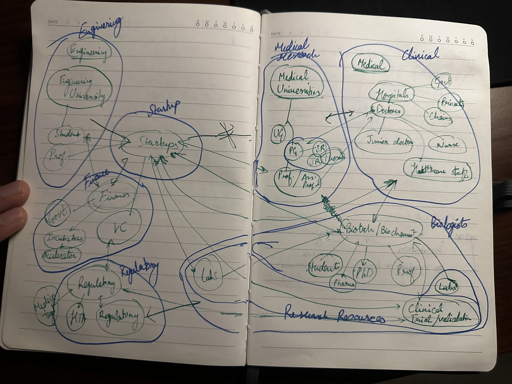
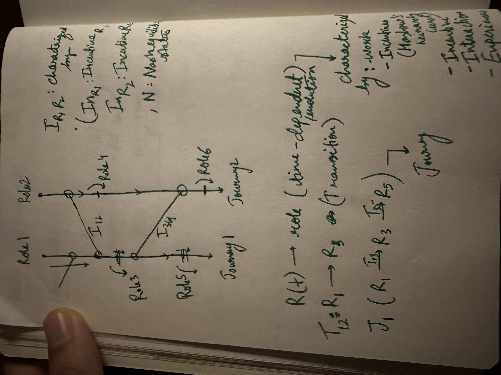
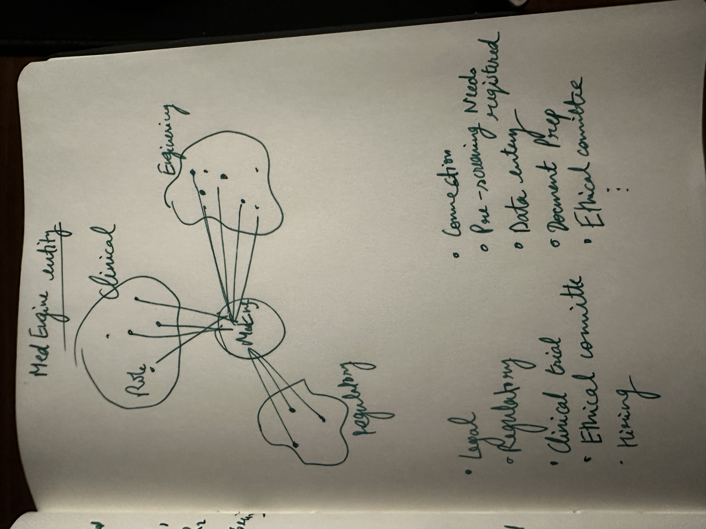

MedEngine
A nurse on a night shift knows exactly why the machine fails. No one in the entire system can hear her. This paper is about building the nerve that could.
This document makes an unusual promise: that a single argument can run, without breaking, from the most abstract question in moral philosophy — what, in the end, is anything good for? — all the way down to the wording of a contract that pays a staff nurse ₹5,000 for a fifteen-second voice note. It begins at the top and descends, because the foundation determines everything built on top of it, and most healthcare systems, this paper will argue, are built on the wrong one.
It is written to be read at three depths at once, so that a busy clinician, a curious generalist, and a founder who needs to build something on Monday can each take what they came for:
Skim it. Every part opens with a short story set in italics. Read only those and you will leave with the thesis intact and, ideally, with something lodged in memory.
Read it. The prose between the stories and the boxes carries the whole argument in plain language. No mathematics is required to follow it. This is the layer for the intelligent generalist who wants to actually understand, not just nod.
Study it. The tinted boxes, figures, payoff matrices, and appendices hold the formal machinery — the equations, the equilibrium conditions, the contract clauses, the regulatory specifics — for the reader who needs to act, not merely agree.
A note on the numbers. Every quantitative claim carries a small tag. measured means it comes from a cited real-world source. modeled means it is derived from stated assumptions and arithmetic. assumed means it is a working figure awaiting data. This is an architecture, not an audit; where a modeled number would change the conclusion if it were wrong, that is flagged in the open. Honesty about certainty is itself part of the design.
A note on vocabulary. An earlier draft of this work was framed in Sanskrit — setu (bridge), chit (consciousness), svadharma (one's own proper role), nishkāma karma (action without grasping at its fruit). Those concepts are load-bearing and remain. Their vocabulary has been made universal so the argument can travel: chit becomes conscious experience; svadharma becomes vocation-fit; nishkāma karma becomes process-over-outcome ethics. As Part 0 shows, these ideas converge exactly with Aristotle and with modern psychology. They are not Eastern or Western. They are, the paper will argue, simply correct.
Part 0The axiom, and the target it forces
A staff nurse on a night shift watches the same infusion-pump occlusion alarm misfire for the hundredth time. She knows the failure better than the engineer who designed the device — she has met it at 2 a.m. across a hundred patients. She works around it, as she always does, and says nothing. Not because she does not care, and not because no one would benefit, but because there is no nerve in the entire system her signal could travel down. The knowledge dies at the bedside. It dies there every night, in every ward, in every hospital in the country. This paper is about building the nerve.
Most system designs begin in the middle. They start with a market, a technology, or an institution that already exists, and they reason outward from it — better, faster, cheaper. This one begins at the very top and works downward, for a simple reason: if you get the foundation wrong, every clever thing you build on top of it inherits the error, and you will optimise brilliantly for the wrong thing. So before we name a single role or design a single mechanism, we have to settle what the whole apparatus is for.
0.1 Descending from the axiom
Here is the foundation, stated as plainly as it can be stated:
There is exactly one thing in the universe with final, non-instrumental value: the conscious experience of agents capable of having it.
Everything else — money, institutions, technologies, markets, even "the system" we are about to spend sixty pages designing — has value only derivatively, in proportion to its effect on conscious experience. This sounds like a large metaphysical claim, the kind that should require a book to defend. It does not. It requires only one premise that almost everyone, on reflection, already holds.
Take any candidate you like for "the thing that finally matters," and trace it to its root. Wealth matters — but ask why, and the answer always terminates in what wealth does to someone's experience and options: security felt, suffering avoided, possibilities opened. Knowledge matters — but because of what it is like to understand, and what understanding lets a conscious being do. A thriving economy matters — but because of the lives lived inside it, never as a number floating free of any liver of those lives. In every case, the value comes to rest in an experiencer for whom things are going well or badly. The philosopher Thomas Nagel gave this its sharpest formulation: for a conscious being, there is "something it is like" to be them1 — and it is precisely in that something-it-is-like that all value ultimately lives.
Now run the thought experiment that makes it undeniable. Imagine a universe physically identical to ours in every particular, except that there is no experience anywhere within it — no one home, not a single flicker of awareness. Stars burn, planets turn, complex chemistry unfolds. Is anything in that universe good or bad? The honest answer is no — not because nothing is happening, but because there is no one for any of it to matter to. Value needs a subject. Strip out every subject and you have not removed some of the value; you have removed the possibility of value entirely.
This is the sentientist position in ethics: that the capacity for conscious experience — to have things go well or badly from the inside — is what grounds moral status. Its modern lineage runs through Nagel's "What Is It Like to Be a Bat?"1, Peter Singer's argument that the boundary of moral concern is the capacity to suffer and not species membership2, and Christine Korsgaard's case that any being for whom things can be good or bad is thereby an end in itself, never merely a means3. David Chalmers's framing of consciousness as the "hard problem" reinforces why this matters: experience is not just one more physical fact among others to be optimised away — it is the very thing explanation is trying to reach4.
An honest complication, stated up front. Robert Nozick's "experience machine" — a vat that could feed you any pleasant experience you liked — is usually wheeled out against a crude version of this view, and rightly so5. Most people decline to plug in. The lesson is not that experience doesn't matter, but that we value genuine experience — real understanding, real connection, real achievement — over counterfeit sensation. The objective we build below is therefore not "maximise pleasant feelings." It is something the next section makes precise, and it survives the experience machine intact.
If conscious experience is the only thing with final value, then the correct top-level objective for any system that touches human lives is not output, not efficiency, not growth, but the quality of conscious experience of the agents within it and affected by it. Output and growth do not disappear — they remain enormously important — but they are demoted to what they always were: means, never ends. And this demotion has teeth. A healthcare ecosystem that cures diseases while grinding its nurses, its students, and its patients into exhaustion is not succeeding with an unfortunate side-cost to be netted out later. Under the axiom, it is failing — failing in a way the conventional accounting is structurally unable to see, because the ledger it keeps has no column for experience.
If this still sounds abstract, make it concrete. Picture two hospitals with identical clinical outcomes — the same survival rates, the same complication rates, the same costs per case. In the first, the staff are rested, respected, and absorbed in work they find meaningful; patients are spoken to, oriented, unhurried. In the second, the staff are burnt out and silenced, and patients are processed through two-minute encounters in a fog of fear. By every metric a ministry of health currently tracks, these two hospitals are the same. The dashboards are identical. And yet anyone who has stood in both knows, immediately and without argument, that one is far better than the other. The axiom simply names what everyone already feels: the difference between them is the whole of what matters, and it is precisely the thing the ledger does not record. A system optimised on that ledger will, given any pressure, convert the first hospital into the second — and call it efficiency.
0.2 The sharper, constructive claim
The bare philosophical point, left there, would be a sermon — true, perhaps, but inert. The constructive claim is what gives it an edge you can build against:
The best possible system is one in which every conscious agent within it has the best — or, where that is genuinely impossible, the least-worst — experience available to them, while excelling at their role.
Read quickly, those two clauses look like rivals. "Best experience" sounds like comfort and ease; "excelling at a demanding role" sounds like effort and strain. Surely you trade one off against the other? This is the most important place in the entire paper to slow down, because the answer is no — and the "no" is not wishful thinking but one of the better-established findings in the science of human well-being.
Properly understood, excelling at one's role and having the best available experience are not two competing states you must balance. Under the right conditions they are the same state. Three traditions, separated by millennia and oceans and sharing no common source, walked toward this conclusion from completely different directions and arrived at the same place:
| Tradition | What it found | The convergent claim |
|---|---|---|
| Flow Csikszentmihalyi, modern psychology | The absorbed, self-forgetting state that arises when a real challenge meets a matched skill — empirically among the highest-quality experiences humans ever report.6 | The highest quality of experience is not the opposite of excellent, demanding, skilled action. It is produced by it — when the conditions are right. |
| Eudaimonia Aristotle | Well-being is not a feeling but an activity: "the activity of the soul in accordance with virtue" — flourishing through the excellent exercise of one's characteristic capacities.7 | |
| Vocation-fit the Gītā's svadharma & nishkāma karma | Performing one's own role well — even imperfectly — beats performing another's perfectly; combined with full engagement that does not grasp at the result. The output is sustained excellent action with interior steadiness. |
And here is the part that turns a nice convergence into an engineering specification. The conditions under which doing demanding work becomes the best available experience are not mysterious. They have been studied, named, and replicated. A challenge matched to skill, so the agent is neither bored nor drowning. Autonomy in how the work is executed. Clear, fast feedback. Meaning that is legible to the person doing it — they can see why it matters. And, underneath all of these, a floor of dignity and security below which the role never drops. This is essentially the same list that Self-Determination Theory arrives at from rigorous empirical psychology — its finding that human motivation and well-being rest on three basic needs, autonomy, competence, and relatedness, is one of the most replicated results in the field8.
You have felt this even if you have never named it. Think of a surgeon two hours into a difficult operation that is going well — or a musician inside a piece, or a coder who looks up to find the afternoon gone. Time distorts. The self-consciousness drops away. There is only the next move, met by exactly the skill it demands. People who have these experiences describe them as among the best of their lives — and, crucially, they occur during the hardest work, not during rest. No one reaches that state on a beach. The point is not that work should be pleasant in the way a holiday is pleasant; it is that the deepest human satisfaction is available only through demanding, absorbing, skilled engagement — which means a system that wants the best for its people must give them more real challenge matched to real skill, not less. The cruelty of the systems we will examine is not that they overwork people. It is that they exhaust them on the wrong kind of work — depleting hindrance rather than absorbing challenge — and so deny them both rest and flow at once.
Why does this matter so much for a system design? Because every one of those conditions is a design variable. They are not fixed features of human nature you must accept; they are properties of how a role is structured — and a system can be engineered to supply them or, just as easily, to destroy them. This is the hinge of the whole paper. Most current healthcare systems destroy them by accident, because they are optimised for throughput and treat experience as a cost to be minimised rather than the output to be maximised. The nurse from our opening is not failed by malice. She is failed by a design that never had a place for what she knows.
0.3 The optimisation target, stated precisely
To put conscious experience at the top of the stack is to commit to an objective function — a precise statement of what the system is trying to maximise. And here we have to be careful, because the obvious version is a trap, and the trap is instructive.
The naïve target would be: maximise the total sum of experiential value across all agents. Add up everyone's well-being and push the number as high as it will go. This is classical utilitarianism, and it fails — not at the margins, but catastrophically, in ways philosophers have spent fifty years cataloguing. It licenses Derek Parfit's Repugnant Conclusion: a vast population of lives barely worth living can sum to more total welfare than a small, flourishing one, so the arithmetic recommends the teeming misery9. It licenses Nozick's utility monster: a being that converts resources into pleasure more efficiently than anyone else should, by the sum-logic, be fed everything while the rest of us starve5. And it runs headlong into what John Rawls called the separateness of persons — the objection that summing welfare across people treats humanity as a single great vat of experience to be filled, when in fact there is no one who experiences the "total," only individuals each living one life that is the only one they have10.
Any system that genuinely optimised the naïve sum would be monstrous. But — and this is the constructive move — the ways it fails are a precise specification of the constraints the real objective must satisfy. Each failure tells us exactly what to forbid.
There is a short story that makes this monstrousness impossible to look away from, and it is worth pausing on because it does, in twelve pages, what the philosophy above does in fifty years of argument. In Ursula K. Le Guin's The Ones Who Walk Away from Omelas, a whole city lives in genuine, unforced happiness — its art real, its health real, its love and music and summer festivals none of them faked — on one fixed condition: that a single child be kept in perpetual filth, hunger, and terror in a locked cellar, and that every citizen, on coming of age, be shown the child and told that all their joy depends on its misery.66 The arithmetic of the naïve sum endorses Omelas without hesitation — thousands flourishing against one suffering child sums to an overwhelmingly positive total — and this is exactly the point. Le Guin's achievement is to let you feel, in the body, that the arithmetic is a lie: that no quantity of others' joy can be traded against the caged child's ruin, because the two were never denominated in the same currency and no exchange rate between them exists. The ones who walk away are not running a better calculation. They are refusing the exchange itself.
That refusal is the entire content of the two clauses below. A system built on the objective function Φ cannot be an Omelas: the floor (clause ii) forbids the cellar outright, before any summation begins, and the non-fungibility of persons (clause i) denies that anyone's flourishing could ever be the price that buys it. And here is the finding this paper will return to again and again, stated once at the outset so its force is unmistakable: our present healthcare systems are quiet Omelases. The nurse ground down on the night shift, the intern at hour eighty-eight, the patient treated as a resource to be processed — these are the children in the cellar, held below the floor so that the throughput above them can run. The differences from Le Guin's city are only two, and neither is a comfort: no one chose this bargain deliberately, and almost no one in the system can even see that it is being struck.
MedEngine optimises a prioritarian, capability-grounded, floor-constrained maximisation of eudaimonic experience across non-fungible persons. Four components, each one a direct repair of a way the naïve sum fails:
(i) Non-fungibility of persons. Experiential value is not freely tradable across agents. One person's flourishing does not cancel another's suffering on a shared ledger; there is no exchange rate at which immiserating someone is bought off by another's gain. This blocks the utility monster and the sacrifice of the individual at the root — it is the separateness of persons, written into the maths.
(ii) A per-agent floor — the "least-worst" clause. No role may be experientially immiserating. Where hard reality limits the best attainable experience (some work is genuinely difficult; some loss genuinely unavoidable), the obligation becomes the least-worst attainable: dignity, security, and meaning guaranteed even where joy cannot be. The floor binds before any maximisation begins.
(iii) Prioritarian weighting. Above the floor, an improvement to a worse-off life counts for more than an equal improvement to an already-flourishing one. This is Parfit's Priority View11, now a rigorous framework in welfare economics12: benefits matter more, morally, the worse-off their recipient.
(iv) Role-excellence as complement, not competitor. Because of the §0.2 convergence, excellent role-performance is treated not as a cost traded against well-being but as a primary route to it. For each agent, the optimiser seeks the flow-conditions under which doing the role well is the best available experience.
maximise Σᵢ w(eᵢ) subject to eᵢ ≥ F for every agent i, with no inter-agent substitution permitted below the floor F. eᵢ = agent i's eudaimonic experience w(·) = concave (prioritarian) weighting F = the dignity floor persons are non-fungible
This is demanding. It is also, unlike the naïve sum, not monstrous — and it is the kind of objective a humane system could actually be built to pursue.
0.4 The central engineering problem: making experience pay
Here is the hard part — the part that separates this from a homily and turns it into an engineering brief. Markets are extraordinary instruments. They price instrumental value — what an agent produces — with a precision and a reach no central authority could match. What they do not price, at all, is intrinsic value — the quality of the agent's experience while producing it. In the language of economics, experiential quality is an externality: a real effect that falls outside the transaction and so goes unpriced13. And usually it is a negative externality, because the cheapest way to extract output in the short run is very often to degrade experience — through burnout, deskilling, surveillance, the harvesting of attention. The system offloads the experiential cost onto the agent and books the output as profit. The nurse's exhaustion never appears on any invoice.
The analogy to pollution is exact, and worth holding onto, because it tells us what kind of solution is possible. A factory that dumps waste into a river produces real value and imposes a real cost — but the cost falls on people downstream who are not party to the transaction, so the price of the factory's goods never reflects it. For a century, economists called this a market failure and prescribed a remedy: make the cost visible in the price, and the factory will pollute less without anyone needing to be a better person. Burnout is the river. The experiential cost of grinding down a nurse, a resident, a patient is dumped downstream — onto them, their families, the next understaffed shift — and never priced into the "efficient" throughput that produced it. The remedy is the same in form: not a moral campaign against hospitals, but a redesign that makes the experiential cost visible and the experiential investment pay. That is a tractable engineering problem, not a wish.
The naïve response is to declare markets the enemy and retreat into non-market institutions. That is a mistake, because the misalignment is narrower than it looks — and, being narrow, it is fixable.
Where alignment is already free. In a large and growing class of work — precisely the skilled, judgment-intensive, creative work that dominates a healthcare-innovation ecosystem — flow and productivity are positively correlated. An engaged clinician, an absorbed engineer, a researcher gripped by a real problem produces more and better, not less. Here, optimising for experience and optimising for output are literally the same act, and a market that happened to measure the right thing — sustained excellent contribution, rather than hours logged or boxes ticked — would already reward it. The decades of research on work design say exactly this: jobs built for autonomy, skill-variety, task significance, and feedback produce both higher motivation and higher performance14.
Where alignment must be engineered. Where short-run extraction genuinely out-earns experiential investment, the externality has to be internalised by design — using tools borrowed from environmental economics and repurposed. You price the externality (tie compensation, governance weight, or capital cost to experiential outcomes). You design roles for the flow-conditions of §0.2 as a first-class objective. You build non-market floors for what markets reliably under-provide. Ronald Coase's great insight was that externalities get internalised when the transaction costs of bargaining over them fall low enough15 — which tells us precisely what kind of thing the solution is.
Stripped to its core, MedEngine is a machine for internalising this externality across a healthcare ecosystem — first economically, by making the high-value interactions positive-sum in hard cash and credit, and then experientially, by asking of every interaction not only "does this create value for both parties?" but "does it leave both conscious agents better off in the having of it?" The economics is the means. The experience is the end.
0.5 Method — how this paper is built
Six commitments govern everything that follows. They are stated here, in the open, so you can hold the paper to them.
- Build on, do not rebuild. This paper rests on a substantial existing corpus — a 72-role map of the ecosystem, an entity architecture, a technical architecture, a four-institution founding substrate, and the philosophical groundwork above. That corpus is the substrate. Net-new effort goes to eight verified gaps (Appendix A). Strong existing material is cited and extended, not regenerated.
- Exhaustive on roles; tiered on interactions. Roles are cheap to enumerate, so we enumerate every one (Part 2). Interactions number roughly 2,500 ordered pairs; analysing all of them is infeasible and low-yield, so they are tiered by value (Part 4). This is not laziness — §1.4 shows it is the mathematically correct allocation of effort.
- Quantify with discipline. Every figure is tagged; no false precision; certainty is stated, not implied.
- Steelman before recommending. Every major design choice meets the strongest version of the opposing case before any verdict is reached. You will see this most sharply when we put the Hayekian case against this entire project at full strength (§5d).
- India-first, regulator-fluent everywhere. The system is designed for and validated in the Indian healthcare ecosystem first — clinically, financially, legally, and under Indian regulation. But it is built to meet, on export, the regimes any India-built device or software will eventually face: the EU, the US, and the WHO/ICH baseline. The regulatory detail lives in Part 6 and the companion architecture.
- The organising metaphor is load-bearing, not ornamental. MedEngine is modelled throughout as the circulatory and peripheral nervous system of the ecosystem — it carries signal and resource between organs; it does not think for them. Cognition, judgment, and invention stay with the people in the roles. They are the heroes. This metaphor is the spine of the anti-central-planning argument of Part 5, and the source of the paper's register. We will hold its tension visibly.
Part 1The ecosystem as a body that cannot feel itself
Picture the healthcare-innovation ecosystem as a single organism. The clinical wards are its sense organs, pressed against disease, registering every failure in real time. The engineering schools and biology labs are its hands, able to build and to probe. Capital is the nutrient in its blood. Regulators are its immune system, telling safe from harmful. And connecting all of it — carrying the nurse's 2 a.m. observation to the engineer's bench, the bench's mechanism back to the clinic, the validated problem onward to the investor — there should be a nervous system and a circulation. There isn't one. The organism has superb organs and no connective tissue. Each organ is starved of what the others produce. The body cannot feel itself.
1.1 The shape of the failure
Begin with a fact that should be more surprising than it is. Healthcare-innovation ecosystems do not fail, in the main, for want of capability. The talent exists, in enormous supply. The capital exists. The clinical need is vast, urgent, and entirely visible. And yet the innovations that ought to flow from all that capability simply do not appear at anything like the rate the raw ingredients would predict. Why?
Because the interactions that would convert capability into value do not happen — and they do not happen because, for the individual agents involved, starting them is irrational. This is the crucial reframing. The failure is not a failure of will, or of talent, or of goodwill. It is a failure of incentives at the level of the individual move.
Look closely and you see it everywhere:
- A junior resident has just watched a daily clinical failure with her own eyes. She has no time, no channel, and no reason — no credit, no payment, no path — to convey it to an engineer who could fix it. So she doesn't. Rationally.
- A consultant could validate a startup's device in twenty minutes. Doing so informally gains her nothing and exposes her to reputational and ethical risk. So she declines. Rationally.
- A biology PhD with a validated drug target and an engineering student who could build the assay to test it are, this very semester, two buildings apart on the same campus. No structure, no shared credit, no IP template lets them collaborate. So they never meet. Rationally.
Each of these is a high-value interaction that the system has made individually irrational to begin. Notice what is not the missing ingredient: not another accelerator, not another fund, not another incubator, not more exhortation to "collaborate more." The missing element is connective tissue — a layer whose entire purpose is to make these high-value interactions individually rational for every party, so that the cooperative outcome becomes the self-interested one and coordination stops requiring altruism.
It is worth slowing down to trace a single one of these non-interactions all the way through, because the texture of the failure is the whole argument. Take the biology PhD and the engineering student. She has spent two years validating a molecular target for a diagnostic; she has the biology cold but cannot build an instrument. Three hundred metres away, he is casting about for a final-year project with real stakes; he can build almost anything but has no problem worth building for. If they met and combined, they could produce something genuinely new — exactly the kind of cross-disciplinary work that the most valuable medical technologies come from. So why don't they? Walk the obstacles in order. They have no reason to be in the same room — no shared class, no shared supervisor, no event that brings their two departments together. If they did meet, they would not understand each other — her "validated target" and his "buildable spec" are different languages, and each would suspect the other of not grasping the real difficulty. If they pushed past that, they would hit the credit problem — whose thesis is it, whose name goes first, which department gets the line on its annual report. And if they solved that, they would hit the IP problem — who owns what they make, on what terms, and the university's technology-transfer office would take months to decide while the moment passed. Any one of these obstacles is enough to kill the collaboration. The system stacks all four. The two of them are not failing to cooperate because they are selfish or short-sighted; they are responding correctly to an environment that punishes the very move the ecosystem most needs. This is what connective tissue is for: not to inspire them, but to remove, in advance and as a standard service, every one of those four obstacles, so that the collaboration becomes the path of least resistance rather than an act of heroism.
The opening image — the nurse who knows the device better than its designer — is not a rhetorical flourish. It is one of the most robust findings in the study of where innovation actually comes from. Eric von Hippel's research overturned the assumption that manufacturers are the natural source of innovation: across many fields, the users on the front line, especially the most advanced "lead users," are the dominant functional source of novel and valuable ideas1617. In medicine the effect is striking and quantified:
The knowledge is demonstrably there, at the bedside and in the patient's home. The problem is that it never travels. Von Hippel named precisely why: need-and-context knowledge is "sticky" — costly to extract and move from where it lives — so it stays put, and the people who could act on it never receive it21. Michael Polanyi had made the deeper point a generation earlier: much of what an expert knows is tacit — "we can know more than we can tell" — which is exactly why it does not flow out on its own and has to be deliberately drawn out22.
1.2 The subsystem taxonomy — the organs, named in full
You cannot build connective tissue between organs you have not named. So we begin by decomposing the ecosystem into its subsystems. The existing map identified nine. This paper adds three that the earlier work either silently consumed or bolted on as an afterthought, plus a cross-cutting layer of non-human actors (§1.3). Each addition corrects a real distortion, not a cosmetic omission.
| # | Subsystem | What it is | Status |
|---|---|---|---|
| S1 | Students & Trainees | Medical, nursing, pharmacy, engineering, biology students; interns; PG residents | existing |
| S2 | Faculty & Institutional | Teaching faculty, supervisors, administrators, superintendents | existing |
| S3 | Clinical | Consultants, surgeons, residents, nurses, pharmacists, procurement, ASHAs | existing |
| S4 | Biology & Research | Bench scientists, epidemiologists, CROs, bioinformaticians | existing |
| S5 | Engineering & Technology | Biomedical, mechanical, software, electronics engineers; UX | existing |
| S6 | Finance (supply side) | Angels, VCs, lenders, insurance actuaries, grant officers | existing |
| S7 | Regulatory & Legal | CDSCO/regulatory affairs, ethics committees, IP attorneys, QA | existing |
| S8 | Industry | MedTech firms, distributors, diagnostic chains, MNCs | existing |
| S9 | Connectors | Clinical-technical translators, biodesign fellows, cross-border facilitators | existing |
| S10 | Patients & Caregivers | Acute and chronic patients, family, attendants, professional caregivers, advocates | new · first-class (G2) |
| S11 | Pharma Industry (as influence force) | Reps, key opinion leaders, medical-affairs & marketing, formulary actors | new · first-class (G3) |
| S12 | Medical Financing (demand side) | Patients-as-payers, medical-debt lenders, microfinance, scheme administrators, denial-management | new · first-class (G4) |
Each addition deserves a sentence of justification, because each corrects a way the earlier model would have quietly misled the design.
S10 — Patients and caregivers as agents, not as consumed resource. Earlier framing treated the patient as the thing the system acts upon — a resource consumed, an output target. Under the §0 axiom this is exactly backwards. The patient is the conscious agent for whose experience the entire ecosystem finally exists — and, not incidentally, the most distributed clinical-observation network in it, and (as the evidence above shows) a genuine source of innovation in their own right20. In Indian hospitals especially, family members and attendants are unpaid nursing labour and the primary decision-makers. To model them as scenery is to optimise for everything except the point.
S11 — Pharma as an influence and pollution force, not just a pharmacist. The earlier map saw the pharmacy student and the hospital pharmacist, but not the pharmaceutical industry as a pressure that bends the whole system: the reps who mediate most of a physician's post-graduation information diet, the key opinion leaders whose authority is partly manufactured, the marketing spend that distorts formularies and prescribing. This is not a moral aside. It is a structural force on problem-selection and evidence, and a map that omits it is naïve. §2.11 characterises it without either demonising or excusing it.
S12 — Financing from the demand side, where the catastrophe actually is. The earlier map had finance only on the supply side — the angel, the VC, the lender to firms. But in India the binding financial reality sits on the demand side. Out-of-pocket spending has fallen impressively — from 62.6% of total health expenditure in 2014-15 to 39.4% in 2021-22, the first time public spending has exceeded it measured23 — a real policy success, driven partly by Ayushman Bharat. Yet ~39% remains high by global standards, and the absolute burden of catastrophic and impoverishing health spending still falls on tens of millions of households every year24. A financing model that sees only the firm's cap table, and not the family on the corridor floor, is optimising the wrong ledger.
1.3 A second graph: the non-human institutional actors
The roles above are mostly people. But universities, startups, VC firms, hospitals, and regulators also behave as agents in their own right. They have objectives, incentives, memory, and strategy that are not reducible to any individual inside them. A university's relentless IP-maximalism (we will meet it in Part 4) is not any one administrator's preference; it is the institution's emergent incentive, and it will defeat a nurse's goodwill every time. To model the ecosystem only person-by-person is to miss the forces the institutions themselves exert.
Alongside the role graph G = (R, E, w) of people, define an entity graph G′ = (Q, E′, w′) whose nodes Q are institutions — hospitals, universities, startups, VC firms, regulators, pharma companies, foundations — and whose edges are the contracts, dependencies, and rivalries between them.
The two graphs are coupled: every person-node sits inside one or more entity-nodes, and an entity's incentive vector constrains the feasible actions of every person inside it. This is why interventions must hit both graphs at once. Changing a nurse's payoff (person graph) does nothing if her hospital's procurement incentive (entity graph) still discards her signal. §2.13 characterises the principal institutional actors; §5a maps how MedEngine, itself an institution, must interact with each.
1.4 The currency, and where the value hides
Two structural facts turn an otherwise hopeless problem — thousands of roles, millions of possible interactions — into something tractable.
First: value is not spread evenly across interactions. It follows something close to a power law. A small number of interactions carry most of the ecosystem's latent value — those running from genuine unmet-need discovery, through building, to financing and commercialisation. The rest, individually, matter little. This is not a guess; heavy-tailed value distributions are the norm in innovation and venture returns, where a handful of outcomes dominate the whole portfolio25, and the pattern traces back to Pareto's original observation that a small share of causes produces most of the effects26. The practical consequence is liberating: you do not have to optimise everything. You have to find and fix the few interactions that carry the system.
Second: value and dysfunction can be scored separately and then combined. Score each interaction on the value it would create if it worked (V) and on how broken or absent it is today (D). Their product, P = V × D, is a priority score. The interactions worth attention are the ones that score high on both: high latent value, currently broken — the ones that should happen, would move the ecosystem, and don't.
Let G = (R, E, w) be a weighted directed graph: R the 72 roles, E the directed interactions, and for each edge wᵢⱼ = (Vᵢⱼ, Dᵢⱼ, Pᵢⱼ) with V, D ∈ [0,10] and P = V × D ∈ [0,100]. When the subsystem pairs were scored, the five highest were all variants of a single failure — the problem-discovery chain is severed:
| Subsystem pair | V | D | P | Why it breaks |
|---|---|---|---|---|
| Clinical × Engineering | 10 | 9 | 90 | access asymmetry; no trust bridge; language barrier |
| Clinical × Biology | 9 | 9 | 81 | bedside never reaches bench |
| Biology × Engineering | 9 | 8 | 72 | mechanism never reaches tool-builder |
| Students × Clinical | 8 | 9 | 72 | next generation never logs real problems |
| Students × Engineering | 8 | 8 | 64 | no co-thesis; no cross-credit; IP undefined |
Every Tier-1 pair has Clinical on one side. The clinical role is the ecosystem's hub, and every critical broken interaction routes through it. This is why clinical-side interventions have multiplicative returns — and, under §0, why it is intolerable that the clinical roles are also the ones the system most immiserates (Part 2).
The strategic implication is decisive, and it sets the order of everything that follows: repair the problem-discovery chain, and most downstream interactions unblock by themselves, because they finally have validated, real problems to act on rather than speculative ones. This reframes what the scarcest asset in the whole ecosystem actually is. It is not capital, and it is not talent — both are comparatively well-served by existing markets once real problems start to flow into them. The scarcest and most valuable asset is a validated problem statement: a documented, observed, reproducible clinical or biological problem with a domain expert's sign-off.
The ecosystem's true currency is the validated problem, and the manufacture and certification of it is MedEngine's primary product. Everything else — matching, financing, regulatory throughput, commercialisation — is comparatively easy once that currency starts circulating. This is why the entity is, at its heart, a problem-discovery and certification engine wearing the body of a connective tissue. It exists to draw out the sticky, tacit, front-line knowledge that §1.1 showed is both the richest source of value and the one thing that never moves on its own.
Because this object is the spine of everything that follows, it is worth seeing its journey laid out plainly. A problem begins as a fleeting observation — the nurse's "that alarm is wrong again" — and the system's first job is to catch it before it evaporates, at near-zero cost to her (a fifteen-second note). It is then logged with its originator's name permanently attached, triaged for whether it recurs and matters, validated by a domain expert who confirms it is real and reproducible, and finally certified — at which point it stops being an anecdote and becomes an asset: a documented, expert-signed, attributable problem statement that an engineer can build against, an investor can underwrite, and an ethics committee can review. Only then does it enter the marketplace, where it is matched to a builder, built into a solution, and funded toward patients. Notice that the hardest and most neglected steps are the early ones — catching and certifying — precisely because they depend on the front-line knowledge no existing market pays for. MedEngine concentrates its effort exactly there, on manufacturing the currency, and lets ordinary markets handle the later steps once the currency exists.
Part 2The role taxonomy, with a spine of need
Every node in the graph of Part 1 is a person having a day. The procurement officer choosing the cheaper catheter is not a villain; he is a man whose bonus depends on a cost line and whose desk has no channel through which a nurse's failure report could ever reach him. The resident staying silent is not incurious; she is twenty hours into a shift with thirty minutes of slack. To design for these people you must first see them as they are — not as functions, but as agents anchored, each one, at some level of need, with the system either holding them there or letting them climb. This part walks every role and asks one question of each: what level of human need is this person living at, in this role, at this stage of life — and does the system serve them there, or fail them?

2.0 Method: the five-field characterisation and the Maslow spine
Each role is characterised on five fields: (a) its function and daily tasks; (b) its principal interactions — who, and for what; (c) its Maslow anchor — the level of need at which the role actually lives, conditioned on life-stage; (d) the resulting incentive vector — what genuinely drives behaviour, which is very often not what the institution intends; and (e) the experience quality at the node, scored on a 0–10 eudaimonic scale with the achievable level noted.
The Maslow spine is the net-new instrument here, and it is worth being precise about why we use it, because Maslow's hierarchy is as often abused as invoked. The honest situation is this: the strict five-step ladder — the claim that you fully satisfy one level before the next even activates — is not well supported empirically, and has been criticised since the 1970s27. But the broad structure has stronger support than its critics allow. The largest cross-national test, across 123 countries, found that the categories Maslow named — basic security, safety, social belonging, respect, mastery, autonomy — do each independently predict well-being the world over; they simply operate somewhat in parallel rather than in rigid lock-step28. That is exactly the version we need, and it does real work, because it maps directly onto the objective function of §0.3.
The floor in Φ (eᵢ ≥ F, the least-worst clause) is, concretely, the guarantee of the lower Maslow levels — physiological security (sleep, safety, a living wage) and belonging (not being alone, not being humiliated). Flow and eudaimonia — the route to the best experience — live at the upper levels (esteem, self-actualisation) and, crucially, are reachable only once the lower ones are secured. A sleep-deprived, financially precarious junior resident cannot self-actualise through excellent clinical reasoning; the physiology vetoes the flow. The science of work bears this out from the other side: the path into burnout runs through unmet basic job needs and chronic excessive demands29, and burnout is now understood as a systems failure of work design, not a personal weakness30.
So the Maslow anchor of a role tells you two things at once: whether the floor is breached (is the person stuck below belonging?), and whether flow is even available (can they reach esteem/self-actualisation, or does the role's design forbid it?). The recurring, damning finding of this taxonomy is that the roles richest in problem-knowledge — residents, nurses, patients — are precisely the ones the system pins below the floor. Their potential for flow is structurally unreachable, and their signal is lost. The system fails its most information-dense nodes the hardest — and not by accident, but because it is built for throughput extraction, which treats their lower-level needs as slack to be consumed.
One more thing before we walk the roles: a role's anchor is not fixed. It shifts across a career — the same person, as medical student → intern → senior resident → consultant, re-anchors at a different level at each transition, and the system serves them well or badly differently at each. Part 2 takes the static snapshot. Part 3 takes the journey.
2.1 Clinical (S3) — the hub the whole system routes through
The clinical subsystem sits on one side of every Tier-1 broken interaction (Part 1). It is also where the §0 floor is most violated. These two facts are not a coincidence; they trace to the same cause. Clinical roles carry the richest problem-knowledge and the heaviest throughput load simultaneously — and the system has made a choice about which to harvest. It extracts the throughput and wastes the knowledge.
R3.1 — Senior Consultant / Attending. The specialty's primary expert; independent clinical decisions; teaching residents. Esteem and self-actualisation are genuinely available to this role — the mastery, the status, the deeply absorbing work of a hard diagnosis — but in the high-load public setting they are eroded back down to mere endurance by sheer OPD throughput. The incentive vector is clinical volume and institutional hierarchy, not problem-solving contribution: the system pays for patients-seen, not insights-surfaced. The deepest mathematical failure in the whole system lives here. At a 150-patient outpatient clinic, the queuing utilisation ratio runs to ρ ≈ 5 modeled, which forces consultation time down toward two minutes and destroys the information-rich encounter that would have generated the product insight. The role with the highest knowledge density is the most overloaded; the system extracts throughput while destroying information. Experience: ~4.5/10 public, ~6/10 private; achievable ~8/10.
R3.3 — Staff Nurse. Bedside care execution; medication; monitoring; the first and most continuous line of clinical observation; ten to twenty devices handled a shift. This is the protagonist of our opening, and the numbers behind her are stark. India runs roughly 1.7 nurses per 1,000 people against a WHO benchmark of 331, and ward ratios in stretched public hospitals can reach 1:10–1:20 against norms nearer 1:6 approximate. This is not a comfort problem; it is a mortality problem. The landmark studies are unambiguous: each additional patient per nurse is associated with a ~7% increase in patient mortality, replicated across the US32 and nine European countries33. Under-staffing, hierarchical subordination that makes speaking up costly, and pay far below the role's criticality keep the nurse pinned at safety and belonging — and often below them. Experience: ~2.5/10 in public-sector India. And this is the node with the single highest-value broken interaction in the entire map (Nurse → Biomedical Engineer, P = 100). The person who knows the devices best is the person the system most thoroughly silences.
R3.6 — Hospital Procurement Officer. Purchase decisions for supplies and equipment. Esteem via budget authority, but moral-injury-adjacent: incentivised to minimise cost while bearing none of the clinical consequence. The incentive vector is lowest-bid cost minimisation and vendor relationships, with zero post-purchase outcome tracking. This role is a structural choke point because it translates clinical need into purchase and systematically discards the clinical expertise that should inform the translation — it buys on the spec sheet, never on the nurse's and surgeon's lived experience of the device.
| Role | Maslow anchor | Incentive vector | The signal that is lost |
|---|---|---|---|
| R3.2 Surgeon | flow highly available in the OR (~7/10); collapses to ~4/10 on procurement battles | surgical outcomes, reputation, case volume | instrument failure modes seen daily, no reporting channel |
| R3.4 Specialist Nurse (ICU/OR/NICU) | higher meaning from mastery (~4/10); same load and voicelessness | shift survival, blame-avoidance | life-support failure modes the designers never witnessed |
| R3.5 Hospital Pharmacist | esteem capped by powerlessness | flag therapeutic gaps — but no channel | drug-substitution harms, unreportable |
| R3.10 ASHA / Rural Health Worker | high belonging & meaning on a broken safety base (~4/10) | skewed toward paid tasks over needed ones | enormous last-mile disease-burden signal, untapped |
2.2 Students & Trainees (S1) — the system's future, optimised for the wrong test
This subsystem holds the ecosystem's largest single advantage and converts almost none of it. India trains on the order of 118,000 MBBS students a year across ~780 medical colleges, and produces roughly 1.5 million engineering graduates annually measured34. The binding constraint on turning that supply into cross-disciplinary innovation is not talent. It is mechanism.
R1.3 — Intern / Junior Resident. The ward's workhorse — most hours, most exposure to device and process failures, and the deepest floor violation in the entire ecosystem. This is not hyperbole; it is measured. A study of resident doctors in Mumbai public hospitals found an average 88-hour work week and burnout in roughly 57%35. And the consequence is not only the resident's own suffering: the Harvard Work Hours studies showed that interns on traditional extended shifts made 36% more serious medical errors and suffered roughly double the attentional failures at night3637. Sleep-deprived, stripped of autonomy, pinned firmly below safety with esteem visible but unreachable — the experience here is ~2/10 against an achievable ~7/10, the largest gap in the system. The design implication is sharp: any participation mechanism for this role must cost near-zero marginal time — a 15-second voice note micro-annotated onto an existing task, never a separate task. Daily slack is on the order of half an hour out of sixteen modeled.
R1.4–R1.6 — Engineering Student. The mirror image of the resident's tragedy. These students want real problems — esteem and budding self-actualisation are available, the hunger to build something real is intact — but their problems "feel artificial," ungrounded in any clinical reality they have ever been allowed to see (experience ~5/10, achievable ~8/10). The highest-supply, lowest-mechanism pair in the entire ecosystem (the cross-disciplinary co-thesis, P = 64) sits right here, structurally inert for want of three small things: dual academic credit, an IP template, and a real problem worth solving.
| Other student roles | Maslow anchor | The waste |
|---|---|---|
| R1.1–1.2 Medical student (preclinical → rotations) | esteem held hostage by exam ranking; meaning-void beneath | ~1 observation/week/student × 100,000+ students, captured at ≈ 0 |
| R1.8 Nursing student | belonging + vocation on precarious safety | an 800-strong trained-observer network if curriculum-wired (Part 6) |
| R1.9 Pharmacy student | esteem via regulatory knowledge | the only cohort fluent in CDSCO dossier / Medical Device Rules detail |
| R1.10 PhD candidate | esteem/self-actualisation, long precarity | validated targets that never reach an engineer (the valley of death) |
2.3–2.9 The supply, capital, and gatekeeping roles — in brief
The remaining person-roles share a structural signature: each has a real contribution to make and an appraisal or incentive system that rewards something else. Rather than walk all of them at length, the table below carries the essentials; three deserve a sentence first.
Faculty (S2) are gatekeepers with misaligned appraisals: a professor who co-supervises a cross-disciplinary thesis, mentors a founder, or certifies a problem does career-invisible work, because publication count and grant value are what the appraisal counts. Until that changes — or an outside body issues credit the institution will honour — rational faculty defect from exactly the interactions the ecosystem most needs. This is a recurring lever: much of MedEngine's work is manufacturing career-legible credit for currently-uncredited value. Biology (S4) lives in the valley of death — every incentive pushes toward the paper, none toward the patient or the product — a gap so well recognised that the US built an entire NIH centre to address it38. And finance on the supply side (S6) cannot read a clinical claim: an angel's single hardest problem is clinical due diligence, and India's funding density makes it worse — Indian health-tech drew on the order of $1.1 billion in 2024 against roughly $10 billion for US digital health — an order of magnitude less in absolute terms, and far less again per capita and per problem measured / approximate39. A certified-problem source does not just help the Indian investor; it is the thing that makes early-stage Indian health investing tractable at all.
And consider the role that sits at the other end of the nurse's broken signal: the biomedical engineer (S5). She designs the very infusion pump whose alarm misfires in our opening — and she designs it from a datasheet, having quite possibly never watched one used on a living patient. Her purpose is intact: she wants to build things that help. But the clinical-access barrier walls her off from the one input that would make her good at it, so her experience sits around 5/10 against an achievable 8/10, frustrated rather than broken. The waste is quantifiable. With a validated problem specification in hand, an engineer's build-test-fail cycles shrink by an estimated 50–70% modeled, because the first clinical reality-check moves from eighteen-to-twenty-four months into the project — after an IRB wait and a built prototype — to day one. The nurse who is silenced and the engineer who is blindfolded are the same failure seen from its two ends: a signal that exists, and a receiver that needs it, with no nerve between them. This single dyad (Nurse → Engineer) is why it carries the maximum priority score in the entire map.
| Subsystem · role | Maslow anchor | Where the system fails them — and the lever |
|---|---|---|
| S2 · Faculty / Dean / Registrar | esteem via publications, grants, institutional standing | cross-disciplinary work earns nothing in appraisal; IP-maximalism kills student innovations → outside credit + standard IP template |
| S4 · Bench scientist / CRO / Epidemiologist | esteem via publication | validated mechanisms never become tools → co-lab IP template + milestone capital |
| S5 · Biomedical / Mechanical / Software / UX engineer | esteem/self-actualisation, frustrated | never allowed near the ward; a validated spec cuts build-test-fail cycles an estimated 50–70% modeled → pre-cleared clinical access |
| S6 · Angel / VC / Lender / Actuary | esteem on a base of loss-aversion | cannot evaluate a clinical claim → certification as the market signal that de-risks the raise |
| S7 · Ethics committee / Reg. affairs / IP attorney / QA | esteem on a base of overload and liability-fear | rational delay, not obstruction → complete dossiers + async review collapse the latency without lowering the bar |
| S8 · Distributor / Founder / MNC / Diagnostic chain | founder: self-actualisation on knife-edge runway | the founder is the pipeline's protagonist (Part 3); data assets sit competitively hoarded |
| S9 · Clinical-technical translator 🔑 | self-actualisation by design | does not yet exist as a profession — and is the single highest-leverage hire in the system |
That last row is worth pausing on. R9.1 — the Clinical-Technical Translator — does not currently exist as a profession, and on the evidence of the interaction map it is the highest-leverage role MedEngine could create. This is the connective tissue made flesh: a person who sits at the clinical–engineering interface, observes, converts clinical observation into engineering-actionable problem statements, curates the Problem Bank, and briefs the teams. The theory of why such a broker creates value is well established — Ronald Burt's work on structural holes shows that the person who bridges a gap between two otherwise-disconnected groups with complementary knowledge captures disproportionate value and generates measurably better ideas4041, and Mark Granovetter's "strength of weak ties" explains why novel information travels precisely across such bridges rather than within tight in-groups42. The role is, deliberately, engineered against the §0 floor so the connective tissue is not itself immiserating.
2.10 Patients & Caregivers (S10) — the agents the system is for
A daughter sits on the floor of a tertiary-hospital corridor at 3 a.m., having travelled 200 km, holding a plastic bag of her father's paper records that no system will ever read again. She has become his nurse, his pharmacist, his medical historian, and his banker. She is not a "resource consumed." She is the reason the building exists — and she is the most underused sensor in it.
Under the §0 axiom the patient is not peripheral to the innovation system; the patient is its terminal value-target. The whole optimisation Φ is, in the end, their eudaimonic experience. And they are simultaneously the system's most distributed observation network, its richest consented data asset, and its ultimate quality auditor.
R10.1 — Acute Patient. Bears the cost of every system failure directly, forced down to physiological and safety needs — survival, pain, fear — with the financial threat dragging even safety away. Information asymmetry means they cannot evaluate care quality; out-of-pocket catastrophe risk means the rational move is often to delay care until disease is advanced. The financial structure of Indian healthcare makes patients agents of their own medical harm. Experience: ~2–3/10 in a typical public interaction. R10.3/R10.4 — Family & Attendant. In Indian hospitals, unpaid nursing labour and the primary decision-maker, running on belonging-driven self-sacrifice over a collapsing safety base. A system that optimises the patient's experience while breaking the caregiver's has merely moved the floor-violation one seat over.
As signal source (patient-reported outcomes, adherence, dissatisfaction events), consented data asset, and quality auditor, the patient is the most valuable under-tapped node in the map. Under Φ, MedEngine owes them — before it extracts anything — navigation, financial-scheme matching, record portability, and a real channel for their experience to become a logged problem. Value from day one, designed as a public good. Extraction without that floor would breach §0 at the system's most vulnerable point.
2.11 Pharma as an influence and pollution force (S11)
Here the steelman comes first, because modelling pharma as a cartoon villain is an analytical error that would corrupt the design.
The strongest case for pharma. Pharmaceutical companies fund the majority of late-stage therapeutic R&D that academia cannot. Reps carry genuinely useful information to time-poor physicians who have no other efficient update channel. Many KOLs are real experts whose authority is earned. Medical-affairs functions run real pharmacovigilance. Remove pharma's information and financing, and large parts of the therapeutic pipeline simply stop.
Where it becomes a pollution force — said without flinching. The same channels that carry information carry distortion, and the distortion is structural, not a matter of bad individuals. The medical representative (R11.1) mediates much of a physician's post-graduation information diet — and that diet is selected by a sales incentive, not an evidence one (the rep themselves lives at precarious safety with a documented meaning-void, ~3.5/10). The key opinion leader (R11.2) carries authority that is partly manufactured through speaker fees and advisory boards. Medical-affairs and marketing (R11.3) shape formularies and the promoted evidence base. None of this requires anyone to be acting in bad faith; the incentives do the bending on their own.
MedEngine's currency is the validated problem. A system that did not model pharma influence would let its problem-selection agenda be quietly set by whoever funds the evidence — exactly the capture the Foundation firewall (Part 6) exists to resist. So modelling pharma as a first-class force is not editorial; it is a prerequisite for keeping the Problem Bank honest. The collective intelligence pharma reps hold — millions of physician interactions, unmet-need signals — is also one of the richest health datasets in the country, and there is genuine positive-sum value in surfacing it if and only if the certification firewall holds. Opposing view, fairly stated: defenders note that promotional practice is regulated (the Uniform Code for Pharmaceutical Marketing Practices, now on a statutory footing) and that conflating information with pollution risks starving physicians of real updates. The honest position: the channels are dual-use, the regulation is partial and unevenly enforced, and the design response is transparency and firewalling, not prohibition.
2.12 Medical Financing — the demand side (S12)
Earlier finance modelling saw only the firm's cap table. The binding financial reality in India is on the patient's side, and it is a catastrophe Φ cannot look away from. Out-of-pocket spending, though much improved at 39.4% of total health expenditure23, still pushes tens of millions of households toward poverty each year24. Ayushman Bharat / PM-JAY now offers ₹5 lakh per family per year to roughly the poorer 55 crore Indians, and since September 2024 covers all citizens aged 70+ regardless of income43 — a major advance. But its design carries its own incentive.
Return to the daughter on the corridor floor. Her father needs a procedure that will cost the family ₹80,000 they do not have — so they borrow it, at interest, from exactly the kind of lender who appears at the moment of maximum vulnerability, and a treatable illness becomes a debt that outlasts the recovery. Here is what makes this a tragedy rather than merely a hardship: in a great many such cases, the family is already eligible for a government scheme that would have covered most of the cost — they simply never knew it existed, no one at the hospital had the time or incentive to tell them, and the eligibility was buried in paperwork they could not navigate. The cruelty is not only the cost; it is the cost paid needlessly, on top of a benefit going unclaimed. This is why demand-side navigation belongs squarely inside an innovation system that takes Φ seriously. An agent that reads a family's situation, surfaces the scheme they didn't know they qualified for, and bounds their out-of-pocket exposure is not a "fintech feature" bolted on the side — it is, per rupee, one of the most leveraged interventions on conscious experience available anywhere in the entire map, because it converts ruin back into mere illness.
(1) Fee-for-service (private India) rewards volume over outcomes — unnecessary high-margin procedures, 30-second consults, under-staffed nursing. (2) Package / case-based rates (PM-JAY pays a fixed bundled rate per procedure44) reward cost-compression — early discharge, cheaper substitution, minimal investigation — because the quality incentive is simply absent from a flat per-case payment. Both, from opposite directions, optimise something other than the patient's eudaimonic experience. This is why demand-side navigation — surfacing scheme-eligibility a family didn't know it had, and bounding their out-of-pocket exposure — is one of the most direct interventions on Φ available anywhere in the system (Part 4, T1.6).
2.13 Institutional actors as nodes (the entity graph G′)
Finally, the institutions themselves, each characterised by an emergent objective that no individual inside it fully chooses.
| Institution (node in G′) | Emergent objective | Failure mode it exerts on the people inside it |
|---|---|---|
| University | prestige, ranking, IP revenue | slow, maximalist licensing kills student innovations; cross-credit unrewarded |
| Hospital | margin, throughput, reputation | procurement discards clinical signal; staff experience externalised |
| Startup | survival → growth → exit | burns its few people; needs the tissue most |
| VC firm | fund returns, reputation | herds to proven theses; starves capital-inefficient but high-value problems |
| Regulator (CDSCO/NMC/EC) | safety, public trust, defensibility | rational delay; under-resourced relative to India's scale |
| Pharma company | pipeline value, market share | bends evidence and problem-selection (S11) |
| MedEngine itself | the Φ objective, kept un-captured | its own risk of becoming a brain — §5d |
Because every person sits inside an institution whose incentive vector constrains them, MedEngine's interventions must hit both graphs at once. A nurse's redesigned payoff is inert if her hospital's procurement incentive still discards her report. This is why the entity's instruments are not only individual contracts but institutional ones — membership agreements, EC pre-clearances, dual-credit frameworks, founding-node arrangements — that reshape the entity node so the person inside it can finally act. The full role-by-role mapping is §5a.
Part 3The journey: how need and incentive move through a life
No one is a "junior resident" forever. The same person is a terrified preclinical student, then an exhausted intern, then a registrar with a thesis to write, then a consultant with slack but no framework, then a senior clinician whose name alone could anchor a product. At each transition the floor they stand on and the ceiling they can reach both move — and the system that served them at one stage abandons them at the next. A design that treats roles as static will catch a person at exactly the wrong moment. This part adds the missing axis: time.

R(t) for the time-dependent role, a transition T12: R1 → R3, and a journey J₁(R₁ → R₃ → R₅) — is exactly what §3.1 and §3.2 make precise, each transition re-anchoring the person at a new level of need.The taxonomy of Part 2 is a photograph. Real agents move, and they move along two different kinds of trajectory at once. There is within-role evolution — the same role changing under you over time — and there is role-switching — the transitions between roles, each one re-anchoring the person at a new level of need. MedEngine's interventions have to be timed to these trajectories, because — and this is the whole point of Part 3 — the same mechanism that is useless at one stage is decisive at the next, and offered at the wrong moment it simply misfires.
3.1 Within-role evolution — the same role, changing under you
A role is not a fixed point even for one person holding it. Consider three arcs.
The consultant, over twenty years. The junior consultant is building a practice — clinical load rising, slack thin, anchored at esteem-via-establishment. The senior consultant, two decades on, has the inverse profile: low available time but high leverage and standing, anchored at self-actualisation, able to act as a clinical champion whose name de-risks an entire product. The intervention must invert accordingly. For the junior, the binding constraint is risk and clarity, solved by a time-capped standard advisor agreement. For the senior, it is a leverage channel, solved by a department-level problem-bank partnership and a clinical-champion framework. Offer the senior's mechanism to the junior and it misfires; offer the junior's to the senior and you waste the most valuable asset in the building.
The founder, through funding stages. The pre-seed founder lives on survival-stage safety — runway measured in weeks — with self-actualisation as the only fuel. The post-Series-A founder has bought safety and re-anchors at self-actualisation-via-scale. MedEngine's value to them shifts accordingly: from clinical access and validation pre-seed (the thing that prevents eighteen months spent building the wrong device) to trial recruitment and regulatory throughput post-A (the thing that compresses time-to-market). Throughout, time is the enemy; latency is suffering; the founder's whole arc is a race the tissue can accelerate at every stage.
Within-role evolution is, formally, a trajectory in two coordinates: available slack (Tᵢ − θᵢ) and Maslow anchor. The rule that falls out: match the mechanism to the coordinate, not to the role label.
| Role, stage | Slack | Anchor | Binding constraint | Right mechanism |
|---|---|---|---|---|
| Resident, intern year | ~0.5 h mod | below safety | time | 15-sec micro-log |
| Resident, thesis year | ~1–2 h | esteem (thesis) | a problem + credit | co-thesis match |
| Junior consultant | ~3 h | esteem-establishment | risk & clarity | standard advisor agreement |
| Senior consultant | low abs., high leverage | self-actualisation | leverage channel | clinical-champion framework |
| Founder, pre-seed | abundant but desperate | survival-safety | clinical validation | pre-cleared observation + certified problem |
| Founder, post-A | scarce | self-actualisation-scale | regulatory & trial throughput | EC fast-track + trial DB |
3.2 Role-switching — the re-anchoring at each transition
The higher-stakes dynamic is the switch. At each career transition the agent's Maslow anchor and incentive vector re-set, and so does the set of interactions worth activating. The decisive insight is that the system's value to the same person inverts across switches.
Take the medical arc. At the intern switch, the binding constraint is time and a channel, so the right offer is micro-logging and a translator. One switch later, at registrar, the NMC-mandated MD/MS thesis re-anchors the incentive vector toward producing a research asset — and suddenly a certified problem, plus an engineering co-investigator, plus dual credit, becomes the single most valuable thing MedEngine can offer, where a year earlier it would have been noise. Miss that timing and the highest-supply pair in the ecosystem (the co-thesis, P = 64) stays inert. The engineering arc has its own inflection at the final-year project: a four-week clinical-exposure sprint before the project locks, plus a problem-matched brief with a pre-defined IP split, converts a hypothetical capstone into a deployable, publishable, fundable one — and seeds the first co-inventor relationship that may one day become a company.
Follow one person to feel how completely the right offer changes. Call her Dr. Aisha. As a preclinical student she lives at esteem-via-exam-rank with a meaning-void beneath; the only thing MedEngine can usefully give her is exposure — a glimpse of a real ward that reminds her why she came. As an intern, she is below the safety floor, sleep-broken, with half an hour of slack a day; now the only thing that fits is a fifteen-second voice note she can leave while already at the bedside — anything heavier she will, rightly, ignore. As a registrar with a thesis mandated over her head, everything inverts: now she has a specific, career-shaping hunger for a researchable problem and a collaborator, and the certified problem plus an engineering co-investigator plus dual credit is suddenly the most valuable thing anyone could hand her — the same offer that would have been pure noise to her eighteen months earlier. As a junior consultant she has a little slack and an appetite for her first advisory role, but is paralysed by risk and unclear rules, so what she needs is a clean, time-capped, pre-cleared advisor agreement. And as a senior consultant, twenty years on, she is time-poor but immensely leveraged — her name alone can de-risk a product — so the right offer is a clinical-champion framework that spends her scarce hours at maximum effect. Five stages, five completely different mechanisms, one person. A system that offered her the same thing at every stage would be wrong four times out of five. This is why MedEngine maintains a per-stage mechanism library, not a per-role one, and why its peripheral AI re-configures itself at each switch (the companion architecture).
3.3 The innovation lifecycle as a third clock
Beyond the person's career and the role's evolution runs a third temporal structure: the innovation's own lifecycle — 1. Needs-finding → 2. screening → 3. concept generation → 4. concept screening → 5. strategy → 6. business planning. This is not an arbitrary process; it is the canonical needs-driven method for medical-technology innovation, in which rigorously characterised clinical need comes before any solution45, and it is developed as method in Part 6 and the companion architecture. Each stage activates a different set of roles at a different moment: needs-finding pulls in nurses, residents, and translators; screening pulls in epidemiologists, consultants, and regulatory affairs; concept screening pulls in IP attorneys and QA. MedEngine's operational claim is that an AI-mediated tissue can hold all three clocks in view at once — which is precisely what no human coordinator has ever been able to do, and the reason the whole thing has not been built before.
Part 4The interactions: where the system breaks, and the mechanism that flips it
Two people who would both be better off cooperating, standing a metre apart, choosing not to — not from malice, but because, for each of them alone, reaching out is the losing move. This is the signature of a coordination failure, and it is the disease MedEngine treats. The cure is not exhortation. You cannot lecture a nurse into reporting or an engineer into seeking input. You change the numbers on the page until cooperation is what each of them, acting purely in self-interest, already wants to do. This part shows the numbers, and the contracts that change them.
4.1 The two-axis method, and why tiering is honest
There are roughly 2,500 ordered role-pairs. Analysing all of them would be both infeasible and, worse, a waste — because (§1.4) value is power-law distributed, so a handful of dyads carry the system. Interactions are therefore tiered: deep analysis where it pays, structured tables in the middle, a catalogue at the tail. This is not a shortcut. Under a power law, concentrating effort on the high-value head is the correct allocation of analytical attention, and spreading it evenly would be the mistake.
Each deep dyad is examined on two axes, because §0 insists that economic and experiential positive-sum are distinct and both required.
The game-theoretic axis asks: is this interaction positive-sum or zero-sum? What is the current equilibrium? And — the question that turns out to matter most — is the cooperative equilibrium stable once reached? Here is the single most useful diagnostic insight in the entire paper, and it changes what the cure has to be:
In a true Prisoner's Dilemma, defection is each player's dominant strategy — cooperation is irrational no matter what the other does, and the only fix is to change the payoffs. But most broken interactions in this ecosystem are not really that. They are Stag Hunts46: both parties would cooperate, and both prefer the cooperative outcome — but only if they trust that the other will show up. Faced with uncertainty, each retreats to the safe, low-payoff "hunt the hare alone" equilibrium. The nurse would report if she trusted she'd be heard and credited; the engineer would seek her input if he trusted it would come.
Why the distinction is decisive: the cure for a Prisoner's Dilemma is a bigger incentive. The cure for a Stag Hunt is trust infrastructure — assurance that the other party will cooperate. This is a far cheaper and more durable fix, and it is exactly what a transparent, reputation-bearing connective tissue supplies. Robert Axelrod's work showed that cooperation among self-interested agents emerges and stabilises through repeated interaction and reputation even without any central authority47; Thomas Schelling showed how focal points and credible commitments let parties coordinate on the good equilibrium48. MedEngine is, in this light, a machine for manufacturing the assurance that turns a stalled Stag Hunt into a successful one.
The incentive / Maslow-compatibility axis then asks: does cooperation serve or threaten each party's current level of need (Part 2)? A mechanism that pays a sleep-deprived resident in distant equity (an esteem/self-actualisation reward) while their floor — sleep, safety — is breached will fail, because the payoff is denominated at the wrong Maslow level. The right payoff meets the agent where they actually stand. This is why the same incentive can work for one party and fall flat for the other in the very same interaction.
Underlying all of this is a piece of formal machinery worth naming: the discipline of designing rules so that desired social outcomes emerge from self-interested behaviour is mechanism design, the achievement recognised by the 2007 Nobel in economics49. Its central concept, incentive compatibility — a mechanism in which telling the truth and cooperating is each participant's own best move — is exactly the property every MedEngine contract is engineered to have.
A homely analogy makes the move clear. If two children will not share a cake fairly, you can lecture them about generosity (and watch it fail the moment your back is turned), or you can change the rule: one child cuts, the other chooses. Suddenly fairness is in the cutter's own interest — they cut evenly because they know they will get the smaller piece otherwise. Nobody became more virtuous; the rule made honesty the winning move. That is the entire spirit of Part 4. MedEngine does not ask the nurse, the engineer, the consultant, or the investor to be better people. It is the cut-and-choose rule for a whole ecosystem: it rearranges the situation so that the cooperative, honest, value-creating move is also the self-interested one. Where Part 0 supplied the goal and Part 1 the diagnosis, Part 4 supplies the method — and the method is design, not exhortation.
A dyad breaks for one or more of six structural reasons. Naming them turns diagnosis into a routine:
- Zero-sum-in-current-environment — positive-sum in principle but unrewarded today, so cooperation doesn't last even when it happens.
- Fraternity / cultural friction — the clinician's "evidence," the engineer's "spec," the investor's "traction," and the academic's "novelty" are mutually illegible. This is a first-class cause, not a footnote: the illegibility alone kills interactions every payoff would otherwise favour.
- Time asymmetry — the consultant's minutes versus the founder's months.
- Absent credit / compensation — value created upstream is captured downstream; the provider captures none (an un-internalised positive externality).
- Access asymmetry — one party is structurally walled out (the engineer from the ward, the patient from their own records).
- Procurement–clinical disconnect — the buyer is severed from the clinical experience that should inform the buy.
Against these, five mechanism operations, used throughout: C credit allocation · A access-friction reduction · R risk-bounding · K compensation · M market-signal change. An interaction transitions from defect–defect to cooperate–cooperate if and only if, for each party p, Σ(benefits_p) − Σ(costs_p) > 0 under cooperation, evaluated at that party's Maslow anchor. Miss even one party and the cooperative equilibrium stays unstable.
4.2 Tier 1 — the dyads that carry the system
Let us watch the method work on the maximum-priority pair. The numbers are utils, normalised to [−10, 10], modeled throughout with stated basis.
T1.1 — Staff Nurse → Biomedical Engineer (P = 100, the maximum)
This is the nurse from page one, and the engineer who will never otherwise hear her. The active failure classes are absent-credit (4), access-asymmetry (5), and fraternity-friction (2) — her "this alarm is wrong" is not his "specification." Watch what the current payoffs do to two well-meaning people.
| Eng: seek input | Eng: design blind | |
|---|---|---|
| Nurse: report | 3, 4 | −2, 8 |
| Nurse: stay silent | −1, 2 | 0, 0 |
| Eng: seek input | Eng: design blind | |
|---|---|---|
| Nurse: report | 8, 8 | 3, 4 |
| Nurse: stay silent | −1, 2 | 0, 0 |
Read the left grid. For the engineer, "design blind" dominates "seek input" (8 > 4, and 0 > 2): seeking her input costs him time and friction for an uncertain return. For the nurse, reporting is unsafe if there's a real chance he ignores her. So the equilibrium settles on the bottom-right cell — (silence, design-blind) = (0, 0) — which is exactly what we observe in every hospital in the country. Two people who could have produced an (8,8) outcome produce nothing, and neither is behaving irrationally.
Now apply the mechanism operations. A named-originator credit plus a small honorarium (C + K) makes the nurse's payoff positive even if she is ignored — reporting is no longer a gamble. Pre-cleared observation protocols and a translator (A) collapse the engineer's access cost. A certification-required market signal (M) penalises shipping a design-blind product. The right grid is the result, and notice the crucial property: the new cooperative cell (8, 8) is not merely better for both — it is now dominant for both. Each party's best move is to cooperate regardless of what the other does. That is what makes the repair stable, and not just reachable.
The nurse cooperates iff b_N > c_N. Today b_N ≈ 0, c_N ≈ 2–3 → silence. After MedEngine, b_N ≈ 4–6 (₹500–2,000 per problem + named credit + an originator stake) and c_N ≈ 0.5 (a 15-second voice note) → cooperate. The payoff is deliberately denominated at the right Maslow levels — cash and recognition (safety, belonging, esteem), not distant equity alone — which is precisely why it works where a pure equity offer would not.
The experiential axis (the §0 extension). Does cooperation leave both better off in the having of it? For the nurse: yes — being heard, credited, and materially supported is itself a small repair of the dignity violation. For the engineer: yes — the purpose-frustration of Part 2 is relieved by real grounding. The economic positive-sum and the experiential positive-sum coincide.
Contract — Problem-Bank Originator Agreement: named attribution locked at submission; ₹5,000/entry for first entries; 0.1–0.5% equity if the problem becomes a funded product; 1–3% royalty if licensed; 90-day confidentiality; unilateral withdrawal right.
T1.2 — Junior Resident ↔ Engineering Student (the co-thesis)
If T1.1 shows the method repairing a broken signal, T1.2 shows it creating something that never existed — and it is worth a second worked example, because it is the cleanest case in the whole system where the economics and the experience are the same act. Here are two people the ecosystem desperately needs to meet: a senior resident who, by NMC mandate, must produce a research thesis, and an engineering student hungry for a real problem to build against. The latent value is enormous (it is the P = 64 pair). And today it is exactly zero, because the payoff for engaging is negative for both. Joint work means double the workload, undefined IP ownership, supervisors on each side who see only distraction, and — the killer — no academic credit that either institution will recognise. So the rational move for each is to work alone, and the equilibrium sits at (solo, solo) = (0, 0): two near-misses that never touch.
The repair needs four operations at once (C + R + K + M): dual-credit certification so the thesis counts on both transcripts; a pre-defined IP template (a 40/40/10/10 split among the two students and two institutions) so no one has to negotiate from scratch; co-supervision credit so the faculty are rewarded rather than taxed; a problem pre-seeded from the Bank so neither has to find one; and a modest stipend. With these, the joint payoff flips to roughly (8, 8) and — because each now gains more from collaborating than from going alone regardless of the other's choice — the cooperative equilibrium becomes dominant and therefore stable. But the deeper point is the experiential one. Two people doing demanding, skill-matched, autonomous, meaningful work together is not merely a route to a thesis and a prototype. It is the flow state of §0.2 — the best available experience of their training years — produced as a by-product of the very mechanism that produces the economic value. The contract (a five-party Co-thesis Agreement) does not buy cooperation; it removes the obstacles to a cooperation both people already wanted.
The same move, in different clothes, repairs the other system-carrying dyads:
| Dyad | Current trap → target | Mechanism & the key contract |
|---|---|---|
| T1.3 · Senior Consultant ↔ MedTech Startup the clinical champion | (decline, proceed-blind) = (0,0) → (engage, approach) = (6,9) | R+K+M: a time-capped (≤2 h/mo) advisor agreement pre-cleared by hospital ethics as a class, defined equity/honorarium, clean IP separation. The binding constraint is risk, not money — so the pre-clearance does more work than the cheque. Clinical Advisor Agreement. |
| T1.4 · Patient / Caregiver ↔ Navigation the experiential dyad | near-pure coordination — both withhold only because neither moves first | A+C: genuine, revocable, legible consent is the whole mechanism. Navigation, scheme-matching, and bounded out-of-pocket exposure delivered before any data extraction. Designed as a public good, not a revenue centre — reducing a family's fear and financial catastrophe is Φ. |
Surfacing pharma's unmet-need intelligence is positive-sum only if it cannot capture the certification. At the firm level this is a true Prisoner's Dilemma — each firm's dominant move is to hoard, because sharing helps competitors. But at the individual rep level it is a Stag Hunt: the rep would happily surface a de-identified unmet-need signal for credentialing credit if it did not expose firm strategy. The mechanism (C+M with strict de-identification) targets the individual layer — aggregate signals stripped of firm-identifying strategy. The firewall caveat is absolute: this dyad is safe only if the Foundation's certification is structurally insulated from pharma funding (Part 6). Without that firewall, surfacing pharma intelligence is capture, not cooperation. This is the dyad that makes the anti-capture governance of Part 6 not optional but constitutive.
4.3 Tier 2 — the structured middle
These dyads carry real value but do not need a full payoff matrix. Each is captured by its dominant clash class, the lever that flips it, and whether a standard contract is triggered. A representative sample of the ~25:
| Dyad | Dominant clash | Positive-sum lever | Contract? |
|---|---|---|---|
| Clinical × Finance (validation) | fraternity-friction | due-diligence brief (M) | trigger |
| Engineering × Regulatory (EC/CDSCO) | access + risk | EC fast-track; pre-cleared protocols (A+R) | trigger |
| Biology × Finance (valley of death) | zero-sum-in-env | milestone-gated capital (M+K) | trigger |
| Faculty × Students (cross-disc supervision) | zero-sum-in-env | co-supervision appraisal credit (C) | trigger |
| Surgeon × Mechanical Engineer | access + credit | OR observation + co-originator credit (A+C) | trigger |
| Angel/VC × Certified Problem | clinical-illegibility | certification required to raise (M) | trigger |
| University × Student (IP) | IP-maximalism | standard template: student-major share (M+R) | trigger |
| IP Attorney × Student concept | analysis-paralysis | provisional-filing template (R) | trigger |
| KOL × Evidence base | capture risk | disclosure + firewall (governance) | no |
| Family/Attendant × Care coordination | access | navigation agent (A) | no |
(The full Tier-2 set is maintained as live Problem-Bank metadata, not frozen here.)
4.4 Tier 3 — the catalogue, and the discipline of restraint
The remaining several hundred role-pairs are catalogued as one-line entries (Appendix B), each tagged only as currently-functional (leave alone), low-value (ignore), or latent-high-value-but-broken (promote to Tier 2 on evidence). The discipline here is restraint, and it is not incidental — it is a direct expression of the paper's central thesis. A connective tissue that tried to mediate every interaction would become the very central planner Part 5 warns against. The value of the tiering is precisely that it tells MedEngine where not to spend effort.
Every repair is the same move in different clothes: find the dyad's active failure classes; apply the C/A/R/K/M operations that zero out each party's net cost at their own Maslow anchor; write the standard contract that makes the new equilibrium dominant, and therefore stable. MedEngine never asks anyone to be more cooperative than their incentives warrant. It changes the incentives — economically first, experientially always — and lets ordinary self-interest carry the system the rest of the way. This is mechanism design in the service of conscious experience.
Part 5The entity: connective tissue, not a brain
A nervous system does not have your thoughts for you. It carries the signal from the burned fingertip to the spinal cord and back to the muscle that pulls the hand away — fast, faithful, and silent — and then it gets out of the way. The thinking, the deciding, the meaning all stay with you. MedEngine is built to be exactly that and nothing more: the circulation and the peripheral nerves of a healthcare ecosystem, carrying problems to builders, builders to capital, capital to patients, and patient outcomes back to the problems — while every act of judgment, invention, and care stays with the people in the roles. They are the heroes. The tissue is plumbing and nerves. The hardest discipline in this entire design is keeping it that way — and §5d is where that discipline is made structural rather than merely promised.

MedEngine is not a hospital, an accelerator, a VC, a government body, or an NGO, though it has structural elements of each. It is best understood as a trust-infrastructure entity with an AI operating system at its core — a router. A router does not produce packets; it ensures the right data reaches the right node at the right time, enforces the protocol, and maintains the integrity of the network. When a node fails — a human is unavailable, a process too slow — an agent fills the slack without degrading the output. Its terminal objective is the §0 function Φ, and every design decision is judged against it.
Economically, this makes MedEngine a multi-sided platform, and the established theory of such platforms tells us something important about how to price it. The foundational result is that what gets both sides of a platform to participate is not the level of prices but their structure — which side you charge and which you subsidise50. A platform should deliberately subsidise the side whose participation creates the most value for everyone else51. For MedEngine this is decisive: the front-line originators — the nurse, the resident, the patient — are the subsidised side, given value (and often cash) from day one, because their participation is what makes the whole network worth anything to the paying sides (founders, investors, institutions). The platform economics and the §0 ethics point to the same design.
The pattern is familiar once you see it. A nightclub lets women in free not from chivalry but because their presence is what the paying side will pay for; a credit-card network leans its economics toward cardholders because merchants will pay to reach them; an operating system is given to developers for nothing because the applications they build are what users buy the platform for. In every case the platform deliberately loses money on one side to make the whole network valuable. MedEngine's subsidised side is the front line — and here the economics and the ethics are not merely compatible, they are the same instruction. The nurse must be paid and credited from day one because (economically) her observations are what give the network its value, and because (ethically, under Φ) she is owed a repair of the dignity violation before anything is extracted from her. It is rare and fortunate when the spreadsheet and the conscience agree this exactly. They do here.
It operates as a federation of four firewalled entities, because a single body cannot hold all these functions without corrupting itself. A body that certifies problems impartially cannot also profit from the deals those problems generate — not without, over time, bending its certification toward its profit.
5a The role × entity interaction layer
Before designing the services, map the entity's side of every relationship: what each role gives MedEngine, what it receives, and the contract that governs the exchange. This layer is distinct from the role × role interactions of Part 4 — it is how each node connects to the tissue itself — and it is the precondition for the services design, because the services are simply MedEngine's side of these exchanges. Every exchange must pass the same test as Part 4: immediate, explicit, computable value for the role, denominated at its Maslow anchor.
| Role cluster | Gives MedEngine | Receives |
|---|---|---|
| Resident / Nurse / Student | problem observations (near-zero-time) | named credit, honorarium, co-thesis match, originator equity stake |
| Senior Consultant / Surgeon | ≤2 h/month advisory; champion status | honorarium + equity, CME credit, risk-bounded engagement |
| Engineer / Founder | service fees; problem-solving; optional equity for EC fast-track | pre-cleared clinical access, certified problems, EC in days not months, a matched champion |
| Patient / Family | consented, revocable data; experience reports | navigation, scheme-matching, record portability — value from day one, as a public good |
| Hospital / University (institution) | membership fee; clinical/lab access; data | problem pipeline, EC revenue share, procurement intelligence, staff-retention tool |
| Angel / VC | curation fee; optional LP commitment | pre-validated deal flow, clinical due-diligence brief, co-investment network |
| Pharma rep (firewalled) | de-identified unmet-need signal | clinical-efficiency tools, credentialing, faster access |
Two relationships sit outside the standard library because they are constitutional, not transactional. (1) The Founding-Node Agreement with the four founding institutions (Part 6): cost-of-service pricing in perpetuity, EC-revenue share, co-originator credit, data sovereignty retained by the institution — the only agreement of its type. (2) The Foundation's self-denying ordinance: it holds no IP share in anything — it appears as 0% in every co-thesis and originator split — precisely so its certification stays credible. These two contracts are where the entity's character is written.
5b The overhead services — the connective tissue, itemised
The services are MedEngine's side of the §5a exchanges, and the operating principle is AI-native first, escalate to humans where judgment genuinely requires it (the full technical design is the companion document). Six families: (1) Regulatory-as-a-service — the killer service: EC fast-track compressing pre-cleared categories from months to days; (2) Legal & credit infrastructure — the standard agreement library; (3) Entrepreneurial / Biodesign methodology — the needs-driven process embedded as the bridge method; (4) Hiring & talent pipelines; (5) Financing & matchmaking on both sides, including demand-side scheme navigation for patients; and (6) Technical-systems-as-a-service. Each service exists to reduce latency — because, under §0, time is reduced suffering and latency is the enemy — and each is built so that MedEngine sits off the critical path of any deal it does not need to be on. The services are how the tissue carries signal; they are not how it captures decisions, and §5d is where that line is held.
5c The participant-selection thesis: why character dominates qualification
The most dangerous person to admit to a trust network is not the unskilled one. It is the skilled one who treats every relationship as a move. A connective tissue runs on the assumption that signals are honest and credit is fairly shared; one sufficiently Machiavellian, sufficiently capable participant can poison that assumption for everyone. So MedEngine's selection screen inverts the usual priority: it filters first on character, and only then on skill.
MedEngine decides who works with the entity — as translator, fellow, advisor, founder-in-residence, certifier. The thesis is that character dominates qualification, and — this is the part that distinguishes it from a platitude — that this can be operationalised, not merely asserted. The intuition is backed by hard evidence: in a study of over 50,000 workers, avoiding a single "toxic" hire was worth roughly twice as much to the organisation as adding a top performer52. Keeping the manipulative out matters more than letting the brilliant in.
The traits selected for, in order of decision weight: a strong bias toward altruism / cooperativeness; a strong bias against Machiavellian behaviour; growth mindset; high skill; and a problem-solving disposition. Selection is, on these axes, deliberately role-blind and credential-blind: a nurse, an ASHA, a dropout, and a professor are scored identically, and a pedigree buys nothing.
S = w₁·Coop + w₂·Skill + w₃·Growth + w₄·Track − w₅·Mach hard veto: if Mach > τ_M → reject regardless of S
No amount of skill buys past the Machiavellian floor. The components draw on validated constructs: Mach on the Machiavellianism of the "Dark Triad"53 and the classic Mach-IV scale54, screened inversely; Coop mirroring the Honesty-Humility factor of the HEXACO personality model — sincerity, fairness, modesty55. Weights are weighted toward revealed behaviour, not self-report. Indicative (w₁..w₅) = (0.30, 0.20, 0.15, 0.20, 0.30) assumed — to be calibrated. Selection is continuous, not a one-time gate: everyone enters at low stakes, and Track accumulates from real behaviour, so the screen self-corrects as evidence arrives.
Consider two applicants for a translator role. Candidate A is a celebrated surgeon with a sterling CV — but across three trial engagements he consistently claimed others' contributions as his own, dismissed correction, and was charming to seniors and curt to juniors. His Mach signal, drawn from observed conduct rather than a questionnaire, crosses the veto threshold. S is irrelevant: he is rejected, pedigree and all. Candidate B is a staff nurse with no research credentials — but in low-stakes entry tasks she reliably credited collaborators, sought and absorbed feedback, and followed through on every commitment. Her skill score is modest and will grow; her cooperation and growth signals are high; her Mach signal is low. She is admitted, and trusted in increments as her track record accrues. This is the thesis made operational: the screen is genuinely credential-blind, it weights what people do over what they claim, and it would rather miss a brilliant manipulator than admit one — because, as the toxic-worker evidence shows, the manipulator costs more than the brilliance is worth.
Three obvious objections, met head-on.
Gaming. Self-report personality instruments are gameable — and we should say so plainly, because the evidence is unambiguous: applicants inflate their self-reported character in high-stakes settings, with effect sizes around d ≈ 0.4556. A Machiavellian candidate will answer the test strategically. Response: weight revealed behaviour far above self-report, and exploit a structural fact — faking cooperation is expensive over time. Sustained reciprocity, fair credit-sharing, and follow-through across many low-stakes interactions are costly to counterfeit, and the continuous-selection design collects many cheap observations before any high-trust role is granted. The real instrument is the behavioural record in the Problem Bank, not the questionnaire.
False positives and negatives. Any probabilistic screen mislabels. Response: the design tolerates error by keeping entry low-stakes and trust earned in increments, so a false positive does limited damage before Track exposes it, and a false negative can re-enter through demonstrated contribution. The screen is a prior, continuously updated — never a verdict.
Elitism. A character screen can curdle into a cultural in-group filter, and the validated instruments carry documented cultural bias. Response: the screen is credential- and role-blind by construction precisely to fight this (a nurse out-scores a manipulative surgeon), and the bias risk in self-report is itself the strongest reason to lean on revealed behaviour, which is far less culturally loaded than a translated personality questionnaire. This objection is not dissolved; it is managed, and the residual risk is stated rather than hidden.
The strongest case against a character screen is that it is paternalistic and brittle: markets already punish defection through reputation, "select for virtue" has an ugly history of becoming "select for people like us," and a sufficiently clever bad actor beats any screen. The honest reply is that this is exactly why the screen is thin (one hard veto on manipulation, everything else continuous and behavioural), transparent (criteria and weights published, §5d), and appealable — and why MedEngine relies far more on changing payoffs so defection is irrational (Part 4) than on keeping bad actors out. The screen complements incentive design; it does not substitute for it. If the screen and the incentives ever disagree, the incentives win.
5d The "not central planning" defence: how the tissue stays tissue
This is the load-bearing argument of the paper, and it earns that status only by being made structural rather than rhetorical. We owe the objection its full strength before answering it — and its full strength is considerable.
Friedrich Hayek's case against central planning is not that planners are wicked but that the knowledge a system needs is dispersed, tacit, and local — it exists only in "the particular man on the spot" and cannot be aggregated into a central mind without being destroyed in the act of aggregation57. MedEngine proposes to do exactly the aggregating Hayek warns against. It holds the Problem Bank (an information chokepoint). It screens who may participate (selection power). It controls the default dispatch of information (routing power). Concentrate those three and you have not built a nervous system; you have built a brain that will, with the best intentions, begin to substitute its model of the ecosystem for the ecosystem's own distributed judgment — and then ossify, capture, and misallocate, exactly as planners do. Worse: the very efficiency of the tissue — everything flows through it — is what makes the failure catastrophic when it comes.
The indictment is correct about the risk. The three powers it names are real, and naming them plainly is the first commitment. But Hayek's argument is not a proof that all coordination is planning. We know this because Elinor Ostrom spent a career documenting communities that solved collective-action problems — irrigation systems, fisheries, forests — through self-organised, polycentric rules without any central authority, and won a Nobel for it58. Consider her central case: farmers sharing one irrigation channel face a textbook tragedy — each is tempted to over-draw — and the naïve theorist prescribes either privatisation or a state authority to ration the water. Ostrom found, repeatedly, that the farmers instead build their own durable, transparent, mutually-monitored rules and manage the resource for generations, with no central planner deciding anyone's share. The water is coordinated; no one is commanded. That is the precise shape of what MedEngine attempts, and the five commitments below are, in effect, its version of Ostrom's design principles. Her work is the constructive answer to Hayek's challenge: coordination without a brain is not only possible, it is empirically common — when the right structural commitments are in place. What separates a nervous system from a brain, then, is not the absence of these powers but a set of constraints that prevent their concentration from becoming decision-making.
Five structural commitments, each a constraint MedEngine accepts on itself:
- No decision-capture — the cardinal rule. MedEngine informs decisions; it never makes them for the roles. It may certify that a problem is real, match a nurse to an engineer, and prepare an EC dossier — but it may not decide which problem a founder builds, which device a hospital buys, or which company an investor funds. Every allocative decision stays with the distributed agent who owns it. This is the line between changing payoffs (legitimate; Part 4) and picking winners (forbidden).
- Transparency by default. The certification criteria, the matching weights, the selection weights (§5c), and the dispatch defaults are public and auditable. A chokepoint you can see into is not a chokepoint; it is a utility. Detectability is the discipline.
- Opt-in participation and exit rights. No one is compelled in, and anyone may leave — with their data (portable, revocable consent) and their credit (the originator record travels with them). A planner you can walk away from, taking your information with you, cannot plan you.
- Distributed ownership of IP and credit. IP sits unambiguously with the startups and students; the Foundation holds none. Credit is named, durable, and held by the originator. The tissue owns the connections, never the assets.
- Firewalled, multi-constituent governance. The certifying Foundation is structurally walled from the profiting Capital arm; no single constituency holds a board majority; recusal is mandatory where certification and investment interests touch (Part 6).
If MedEngine ever finds itself deciding, on any role's behalf, what that role should build, buy, fund, or treat — it has become a brain, and it has failed its own thesis. The innovators in the roles are the heroes of this system. The entity is plumbing and nerves, and its highest design achievement is to remain so even as it becomes load-bearing.
Part 6Governance and viability: solvency first, mission locked
Most mission-driven organisations die in one of two ways. They run out of money before the mission can take hold — or they keep the money and lose the mission, drifting, as every institution tends to, back toward output-maximisation and away from the experiencer it was built to serve. A serious design has to survive both deaths. This part shows the arithmetic that keeps MedEngine solvent and the constitution that keeps it honest — in that order, because a noble entity that cannot make payroll helps no one, and a solvent entity that has forgotten its objective is just another extractor.
6.1 The running start: why this is not a cold-start venture
MedEngine does not begin as a platform searching for its first hospital. It begins already deployed inside a clinical substrate — four founding institutions that together constitute the entire clinical-education half of the ecosystem map (students, faculty, clinical, partial research, partial regulatory). What they lack is the engineering, startup, finance, and industry half. MedEngine is the bridge between the two.
| Founding institution | Scale | Primary role in MedEngine |
|---|---|---|
| Pediatric hospital | 75 beds | clinical-validation anchor; patient pipeline; Europe / i4kids node |
| Medical college + hospital | 650 beds, ~500 students | largest problem-reporting engine; accredited EC → first Fast-Track committee |
| Pharmacy college | ~150 students | regulatory-document arm; Medical Device Rules / pharmacovigilance expertise |
| Nursing college | ~150 students | 150-strong trained-observer network; curriculum-integrated logging |
This substrate is not a member that pays to join; it is the founding clinical core, contributed in-kind and valued in advance: clinical access, EC capacity, an 500-student reporting workforce, a 20+ domain-expert pool, and the European networks, totalling ~₹105L/year in-kind — a 5-year NPV of ~₹3.5Cr at a 15% discount modeled. Against this the founding institutions hold a 20% founding-equity block in Services and a permanent Foundation board seat, on cost-of-service pricing in perpetuity. The effect on viability is structural:
- Phase-0 cash burn falls 56%, from ₹50L to ~₹22L over six months modeled — office, clinical access, and EC committee are owned, so three of five Phase-0 line items zero out. The freed cash buys six more months of runway.
- Expected steady-state generation: ~14 certified problems/day ≈ ~5,000/year from the founding substrate alone modeled. For scale: a well-known academic problem bank accumulated ~500 problems over two decades; this substrate produces ~10× that annually.
The sequencing this buys is the whole game: build the Problem Bank internally in Week 1 → demonstrate density → raise with traction → attract members from proof, rather than raise → negotiate access → build → hope. This is the structural moat in Year 1, before any external party can replicate what was built from the inside.
6.2 Financial viability — the arithmetic, stated first
To feel why the running start matters, compare two ways the same venture could begin. The cold-start version raises money on a pitch, then spends a year persuading its first hospital to grant access, then starts building a problem bank from zero, then hopes density arrives before the runway ends — a sequence with four sequential points of failure, each capable of killing it. The founding-substrate version inverts every step: because four clinical institutions are already inside on day one, the problem bank begins filling in Week 1, density is demonstrable within a quarter, and the fundraise happens from traction rather than toward it. The first version asks investors to believe a promise; the second shows them a working engine. That difference — promise versus proof — is worth more than any slide, and it is a moat no external competitor can copy, because they would have to acquire the same clinical core from scratch while MedEngine is already compounding.
This is not only theory. The MedEngine spine is being deployed on Indian ground in a concrete, population-scoped form: i4KIDS India, a paediatric-innovation federation that inherits the four-entity architecture (§5), the "cannot feel itself" diagnosis (Part 1), and the mission-lock governance (§6.3), re-scoped for children and mothers and anchored on the European i4KIDS / Sant Joan de Déu coalition. The Detailed Project Report is the running-start argument of this section made specific — named clinical anchors, a costed roadmap, and a child-first safety regime — and is the best worked example of how the abstract architecture becomes a fundable entity.
The order of priorities is deliberate and unfashionable: financial viability before mission success. An entity optimising Φ that cannot fund itself is a sermon. The model below is modeled throughout, with the load-bearing assumption flagged in the open.
Per member: cost-to-serve ₹8–15L against Partner-tier revenue ~₹35L → ~71% gross margin, because the marginal cost of an additional member is near-zero once the AI infrastructure exists (fixed cost ~₹6–7Cr; variable ~₹8–15L/member). This near-zero marginal cost is the classic platform economics of §5 — and the reason the EBITDA margin climbs so steeply.
The sensitivity that matters: the Year-3+ data-licensing line (₹6–25Cr) is the least certain and the most ethically constrained — it depends on consented, de-identified data governed by the Foundation's Data Ethics Board. If it underperforms, the business is still EBITDA-positive on membership + AI services alone. No conclusion in this paper depends on the data-licensing revenue materialising — that is by design, not optimism.
6.3 Mission-lock: keeping the objective from eroding
Solvency solved, the harder problem is the second death — drift. The question is precise: what is the minimal institutional form that holds "value the experiencer" as a constitutional objective without eroding, over time, back into output-maximisation? The answer borrows a structure now proven in several of the most carefully-designed mission organisations in the world.
The template is the public-benefit corporation with a mission-protecting trust on top. Anthropic — itself a Delaware PBC — built a Long-Term Benefit Trust: an independent body of trustees holding a special class of stock that elects a growing share of the board, explicitly to insulate the mission from short-term financial pressure59. Patagonia went further in 2022, transferring all voting stock to a purpose trust and all economic value to a mission entity, so that "Earth is now our only shareholder"60. The general legal form — the benefit corporation that binds directors to weigh purpose alongside profit — is now well established61, as is the "steward-ownership" idea of a veto-share held by an independent foundation62.
India has no direct equivalent of the US PBC, so the lock is built from Indian instruments: the Foundation as a Section 8 company carries the Φ objective in its objects clause (non-distributing, purpose-bound); entrenched Articles in Services and Capital constitutionally fix the firewall, the no-deal-carry rule, and the multi-constituent board; and a benefit-trust-analogue — an independent trustee body holding a special-rights share that elects a portion of the boards — imports the Anthropic mechanism within Indian company law. The test is falsifiable: could any single wealthy constituent — a pharma LP, a dominant hospital, the Capital arm itself — bend the certification process toward its own interest? If yes, the lock has failed. These structures exist to make the answer no.
6.4 Capture-resistance: the four named risks
Mission-lock is the constitution; capture-resistance is the day-to-day immune system. Four concrete risks, each with its structural mitigation. The deepest of them has a cautionary precedent worth stating, because it is the entire reason for the firewall in Figure 5.1.
The credit-rating agencies are the canonical case of a certifier corrupted by its own revenue. Under the "issuer-pays" model, the body rating a security was paid by the body selling it — and the result, the official US Financial Crisis Inquiry Commission concluded, made the agencies "essential cogs in the wheel of financial destruction" in 200863. Economists had modelled exactly why this happens: a certifier that profits from what it certifies will, under competition and weak reputational cost, inflate its ratings6465. MedEngine's Foundation/Capital firewall is the direct structural answer: the body that certifies a problem can never profit from the deal that problem generates.
The four risks and mitigations: (1) Pharma capture of the Problem Bank — Foundation legally separate, pharma contributions capped at ≤5% of Foundation revenue, certification criteria public and externally audited annually. (2) Capital distorting certification — firewalled personnel; Capital cannot access uncertified problems early; the Foundation is blind to Capital's portfolio when certifying. (3) A dominant anchor capturing the platform (including the founding substrate itself) — no member holds more than one Foundation board seat; the founding seat is advisory, not veto-holding; enhanced services never buy enhanced governance. (4) AI agent bias in matching or certification — all agent decisions auditable, weights published (§5d), quarterly expert audit, and any party may appeal through a process owned by the Foundation, not Services.
6.5 A note on the name
"MedEngine" is the working name, and it is flagged for a later pass, because it is in mild tension with the paper's own thesis. An engine is a central source of power — a faint echo of the very brain that the whole of Part 5 insists this must not become. The argument, the metaphor, and the anti-central-planning spine all point toward a name evoking connective tissue, circulation, or a bridge rather than a central engine. This is non-blocking and editorial; the architecture is the substance, and it survives any renaming.
6.6 Synthesis: two positive-sums, one system
This paper and its companion architecture describe one project from two heights. The mechanism — a federation of firewalled entities that converts the high-value interactions of a healthcare ecosystem from individually irrational to individually rational — makes the whole economically positive-sum. The objective that mechanism serves — that every role is held by a conscious agent whose eudaimonic experience is the only thing of final value, and that the best system is one in which each agent has the best, or least-worst, experience available while excelling at their role — makes the target experientially positive-sum. Because role-excellence and good experience converge rather than compete (§0.2), these are not a trade-off but a single aim.
The economic positive-sum is the means. The experiential positive-sum is the end.
A healthcare ecosystem that cures diseases while flourishing its nurses, residents, engineers, scientists, founders, and patients — in which doing one's own role well is the good life, at the scale of one person in one role and at the scale of the whole — is the system worth building. We opened with a nurse whose knowledge died at the bedside because there was no nerve for her signal to travel down. Everything in this paper has been, in the end, about building that nerve: the credit that makes her speak, the translator who carries her words, the contract that makes the engineer listen, the firewall that keeps the whole thing honest, and the axiom that says her experience was never a cost to be minimised but the entire point. MedEngine is the connective tissue that could carry it. Everything else is instrumentation.
ReferencesThe evidence base
Every source below was verified for author, year, title, venue, and a working link. Where a claim rests on a contested or approximate figure, that is flagged at the point of use. The literatures are grouped by the argument they support.
- Nagel, T. (1974). "What Is It Like to Be a Bat?" The Philosophical Review 83(4), 435–450. jstor.org/stable/2183914
- Singer, P. (1975). Animal Liberation (esp. "All Animals Are Equal"). HarperCollins. overview
- Korsgaard, C. M. (2018). Fellow Creatures: Our Obligations to the Other Animals. Oxford University Press. OUP
- Chalmers, D. J. (1995). "Facing Up to the Problem of Consciousness." Journal of Consciousness Studies 2(3), 200–219. consc.net
- Nozick, R. (1974). Anarchy, State, and Utopia (the "experience machine," pp. 42–45; the "utility monster," p. 41). Basic Books.
- Csikszentmihalyi, M. (1990). Flow: The Psychology of Optimal Experience. Harper & Row. See also Nakamura & Csikszentmihalyi (2002), "The Concept of Flow," Handbook of Positive Psychology.
- Aristotle. Nicomachean Ethics, Book I.7 (eudaimonia as "activity of soul in accordance with virtue"). full text
- Ryan, R. M., & Deci, E. L. (2000). "Self-Determination Theory and the Facilitation of Intrinsic Motivation, Social Development, and Well-Being." American Psychologist 55(1), 68–78. doi:10.1037/0003-066X.55.1.68
- Parfit, D. (1984). Reasons and Persons (the Repugnant Conclusion). Oxford University Press.
- Rawls, J. (1971). A Theory of Justice (the "separateness of persons"). Harvard University Press.
- Parfit, D. (1997). "Equality and Priority." Ratio 10(3), 202–221. doi:10.1111/1467-9329.00041
- Adler, M. D. (2019). Measuring Social Welfare: An Introduction. Oxford University Press.
- Hackman, J. R., & Oldham, G. R. (1976). "Motivation Through the Design of Work." Organizational Behavior and Human Performance 16(2), 250–279. doi
- Pigou, A. C. (1920). The Economics of Welfare (the origin of externalities). Macmillan.
- Coase, R. H. (1960). "The Problem of Social Cost." Journal of Law and Economics 3, 1–44. jstor
- von Hippel, E. (1986). "Lead Users: A Source of Novel Product Concepts." Management Science 32(7), 791–805. doi
- von Hippel, E. (1988). The Sources of Innovation. Oxford University Press.
- Shaw, B. (1985). "The Role of the Interaction Between the User and the Manufacturer in Medical Equipment Innovation." R&D Management 15(4), 283–292 — 26 of 34 (76%) device innovations arose from user–manufacturer interaction. doi
- DeMonaco, H. J., Oliveira, P., Torrance, A., von Hippel, C., & von Hippel, E. (2018). "When Patients Become Innovators." MIT Sloan Mgmt Review; and von Hippel et al. on clinician field-discovery of 57% (82/143) of new drug-therapy uses. SSRN
- Oliveira, P., Zejnilović, L., Canhão, H., & von Hippel, E. (2015). "Innovation by Patients with Rare Diseases and Chronic Needs." Orphanet Journal of Rare Diseases 10, 41. doi
- von Hippel, E. (1994). "'Sticky Information' and the Locus of Problem Solving." Management Science 40(4), 429–439. doi
- Polanyi, M. (1966). The Tacit Dimension ("we can know more than we can tell"). University of Chicago Press.
- National Health Accounts Estimates for India, 2021-22 (NHSRC/MoHFW, released 2024): OOP = 39.4% of THE, down from 62.6% in 2014-15. nhsrcindia.org
- WHO & secondary analyses on catastrophic/impoverishing health expenditure in India (tens of millions of households affected annually; exact counts contested, range ~55–63M). who.int/india
- Korteweg, A., & Sorensen, M. (2017). "Skill and Luck in Private Equity Performance." Journal of Financial Economics 124(3), 535–562 — venture returns are heavily right-skewed. doi
- Pareto, V. (1896–97). Cours d'économie politique — origin of the power-law / 80-20 distribution.
- Wahba, M. A., & Bridwell, L. G. (1976). "Maslow Reconsidered: A Review of Research on the Need Hierarchy Theory." Organizational Behavior and Human Performance 15(2), 212–240. doi
- Tay, L., & Diener, E. (2011). "Needs and Subjective Well-Being Around the World." Journal of Personality and Social Psychology 101(2), 354–365 — 123-nation test of the need categories. doi
- Bakker, A. B., & Demerouti, E. (2017). "Job Demands–Resources Theory: Taking Stock and Looking Forward." Journal of Occupational Health Psychology 22(3), 273–285. doi
- National Academies of Sciences, Engineering, and Medicine (2019). Taking Action Against Clinician Burnout: A Systems Approach. National Academies Press. doi:10.17226/25521
- WHO (2020). State of the World's Nursing 2020; India ≈ 1.7 nurses/1,000 vs WHO benchmark 3/1,000. who.int
- Aiken, L. H., et al. (2002). "Hospital Nurse Staffing and Patient Mortality, Nurse Burnout, and Job Dissatisfaction." JAMA 288(16), 1987–1993 — each extra patient/nurse ≈ +7% mortality. doi
- Aiken, L. H., et al. (RN4CAST) (2014). "Nurse Staffing and Education and Hospital Mortality in Nine European Countries." The Lancet 383(9931), 1824–1830. doi
- National Medical Commission UG Seat Matrix 2024-25 (~118k MBBS seats, ~780 colleges); AICTE engineering enrolment (~1.5M graduates/yr). nmc.org.in
- Ratnani, I., et al. (2019). "Prevalence of Occupational Burnout Among Resident Doctors Working in Public Sector Hospitals in Mumbai." Indian Journal of Community Medicine 44(4), 352–356 — avg 88-h week, ~57% burnout. PMC
- Landrigan, C. P., et al. (2004). "Effect of Reducing Interns' Work Hours on Serious Medical Errors in ICUs." NEJM 351(18), 1838–1848 — +36% serious errors on extended shifts. doi
- Lockley, S. W., et al. (2004). "Effect of Reducing Interns' Weekly Work Hours on Sleep and Attentional Failures." NEJM 351(18), 1829–1837. doi
- Butler, D. (2008). "Translational Research: Crossing the Valley of Death." Nature 453, 840–842. doi
- Healthtech VC: India ≈ $1.1B (2024, Entrackr); US digital health ≈ $10.1B (2024, Rock Health) — ~10× absolute, larger per-capita/per-problem gap. Rock Health
- Burt, R. S. (1992). Structural Holes: The Social Structure of Competition. Harvard University Press.
- Burt, R. S. (2004). "Structural Holes and Good Ideas." American Journal of Sociology 110(2), 349–399. doi
- Granovetter, M. S. (1973). "The Strength of Weak Ties." American Journal of Sociology 78(6), 1360–1380. doi
- Yock, P. G., et al. (2015). Biodesign: The Process of Innovating Medical Technologies (2nd ed.). Cambridge University Press. CUP
- Skyrms, B. (2004). The Stag Hunt and the Evolution of Social Structure. Cambridge University Press.
- Axelrod, R. (1984). The Evolution of Cooperation. Basic Books.
- Schelling, T. C. (1960). The Strategy of Conflict (focal points & credible commitment). Harvard University Press.
- Royal Swedish Academy of Sciences (2007). Scientific Background: Mechanism Design Theory (Hurwicz, Maskin & Myerson). nobelprize.org
- Rochet, J.-C., & Tirole, J. (2003). "Platform Competition in Two-Sided Markets." Journal of the European Economic Association 1(4), 990–1029. doi
- Parker, G. G., & Van Alstyne, M. W. (2005). "Two-Sided Network Effects: A Theory of Information Product Design." Management Science 51(10), 1494–1504. doi
- Housman, M., & Minor, D. (2015). "Toxic Workers." Harvard Business School Working Paper 16-057 — avoiding a toxic hire ≈ 2× the value of a top performer. HBS
- Paulhus, D. L., & Williams, K. M. (2002). "The Dark Triad of Personality." Journal of Research in Personality 36(6), 556–563. doi
- Christie, R., & Geis, F. L. (1970). Studies in Machiavellianism (the Mach-IV scale). Academic Press.
- Ashton, M. C., & Lee, K. (2007). "Advantages of the HEXACO Model of Personality Structure" (the Honesty-Humility factor). Personality and Social Psychology Review 11(2), 150–166. doi
- Birkeland, S. A., et al. (2006). "A Meta-Analytic Investigation of Job Applicant Faking on Personality Measures." Int. J. of Selection and Assessment 14(4), 317–335 — self-report is gameable. doi
- Hayek, F. A. (1945). "The Use of Knowledge in Society." American Economic Review 35(4), 519–530. econlib
- Ostrom, E. (1990). Governing the Commons: The Evolution of Institutions for Collective Action. Cambridge University Press; and (2010) "Beyond Markets and States" (Nobel lecture, polycentric governance). doi
- Anthropic (2023). "The Long-Term Benefit Trust." anthropic.com (primary source; the trust's real-world power has been publicly debated)
- Patagonia (2022). "Earth Is Now Our Only Shareholder" — transfer to the Patagonia Purpose Trust & Holdfast Collective. patagonia.com/ownership
- Murray, J. H. (2014). "Social Enterprise Innovation: Delaware's Public Benefit Corporation Law." Harvard Business Law Review 4(2). HBLR
- Purpose Foundation. "Steward-Ownership & the Veto Share." purpose-economy.org (practitioner source)
- Financial Crisis Inquiry Commission (2011). The Financial Crisis Inquiry Report — rating agencies as "essential cogs in the wheel of financial destruction." govinfo.gov
- Bolton, P., Freixas, X., & Shapiro, J. (2012). "The Credit Ratings Game." Journal of Finance 67(1), 85–111. doi
- White, L. J. (2010). "Markets: The Credit Rating Agencies." Journal of Economic Perspectives 24(2), 211–226. doi
- National Health Authority. Ayushman Bharat PM-JAY — ₹5 lakh/family/yr; ~55 crore beneficiaries; 70+ universal cover (Vay Vandana, Sept 2024). nha.gov.in/PM-JAY
- National Health Authority. PM-JAY Health Benefit Package (HBP 2.2) — fixed package/case rates. nha.gov.in
- Le Guin, U. K. (1973). "The Ones Who Walk Away from Omelas." In New Dimensions 3 (ed. R. Silverberg); collected in The Wind's Twelve Quarters (1975). A parable of a utopia whose happiness is contingent on one child's suffering — the literary refutation of aggregative utilitarianism and a dramatisation of the non-fungibility of persons and the dignity floor (§0.3). overview
AppendicesReference matter
Appendix A — The eight gaps this paper closed
| # | Gap | Closed in |
|---|---|---|
| G1 | Maslow spine (per-role, life-stage-conditioned) | §2.0 & throughout Part 2; Part 3 |
| G2 | Patients / family / attendants as first-class roles | §1.2 (S10), §2.10 |
| G3 | Pharma as influence / pollution force | §1.2 (S11), §2.11 |
| G4 | Patient-side / demand-side financing | §1.2 (S12), §2.12, Part 4 (T1.4/T1.6) |
| G5 | Non-human institutional actors as nodes | §1.3, §2.13 |
| G6 | Participant-selection thesis (qual + quant) | §5c |
| G7 | "Not central planning" defence + mission-lock | §5d, §6.3 |
| G8 | Global-audience philosophy rewrite (de-Sanskritised) | Part 0, and vocabulary throughout |
Appendix B — Interaction catalogue (tail)
The Tier-3 remainder of the ~2,500 ordered role-pairs is maintained as live metadata in the Problem Bank rather than frozen here, each entry flagged functional / low-value / latent-high-value-but-broken. Only the last flag promotes a pair to Tier-2 analysis (§4.3), on evidence. The discipline is restraint: the value of the catalogue is that it marks where the tissue should not intervene.
Appendix C — Notation
Φ objective function (prioritarian, floor-constrained eudaimonic experience over non-fungible persons) · eᵢ agent i's eudaimonic experience · F experiential floor · w(·) concave prioritarian weighting · G=(R,E,w) role graph · G′=(Q,E′,w′) institutional-entity graph · V,D,P=V×D value / dysfunction / priority · ρ=λ/(c·μ) queue utilisation · slack(i)=Tᵢ−θᵢ · C/A/R/K/M mechanism operations (credit / access / risk-bounding / compensation / market-signal) · S participant-selection score · τ_M Machiavellian veto threshold.
Field deployment: i4KIDS India — Detailed Project Report — the MedEngine spine, re-scoped for paediatrics and made specific on Indian ground.